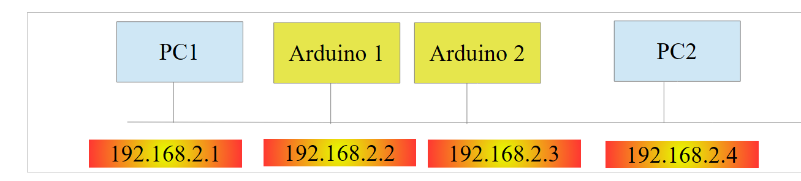
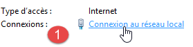
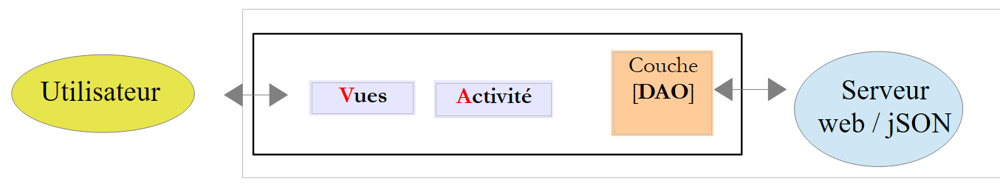
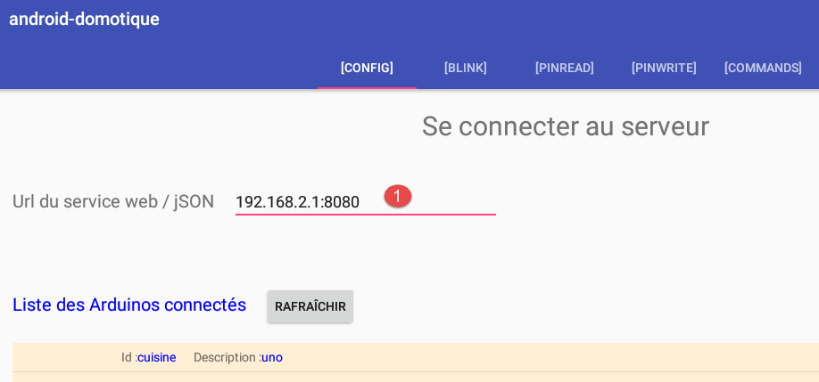
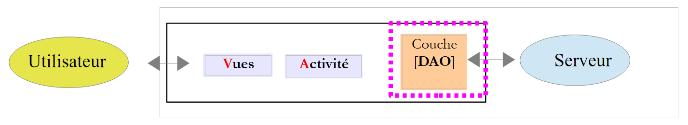
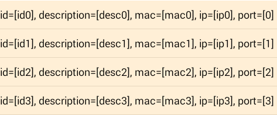
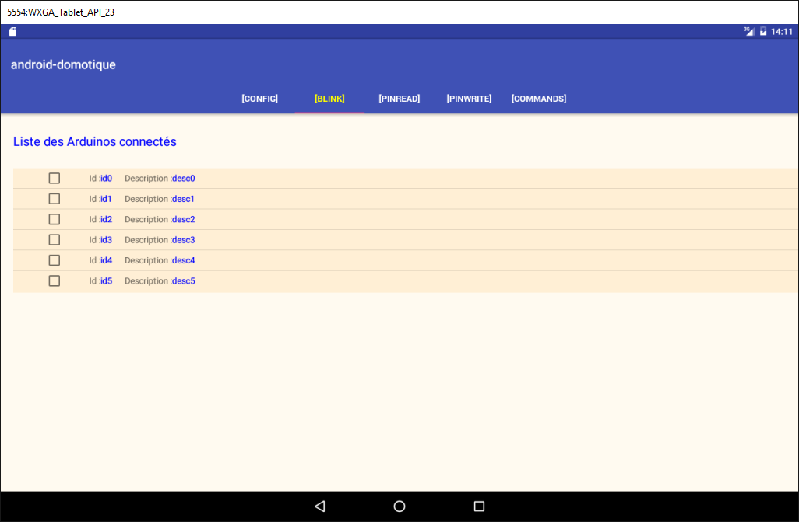

5. TP 2 - Controlar Arduinos con una tableta Android
Ahora vamos a aprender a controlar una placa Arduino con una tableta. El ejemplo a seguir es el del proyecto [client-android-skel] del curso (véase el apartado 2).
5.1. Arquitectura del proyecto
El proyecto en su conjunto tendrá la siguiente arquitectura:
 |
- Se os proporcionará el bloque [1], el servidor web / jSON y las placas Arduino;
- tendréis que construir el bloque [2] y programar la tableta Android para que se comunique con el servidor web / jSON.
5.2. El material
Tenéis a vuestra disposición los siguientes elementos:
- un Arduino con una extensión Ethernet, un LED y un sensor de temperatura;
- un miniHub para compartir con otro estudiante;
- un cable USB para alimentar el Arduino;
- dos cables de red para conectar el Arduino y el PC a una misma red privada;
- una tableta Android;
5.2.1. El Arduino
 |
A continuación te explicamos cómo conectar los distintos elementos entre sí:
- desconecta el cable de red de tu PC;
- conecta tu PC y el Arduino mediante un cable de red;
- El Arduino que utilices ya estará programado. Su dirección IP será [192.168.2.2]. Para que su PC detecte el Arduino, debe asignarle la dirección IP en la red [192.168.2]. Los Arduinos se han programado para comunicarse con un PC que tiene la dirección IP [192.168.2.1]. A continuación te explicamos cómo hacerlo:
Accede a [Panneau de configuration\Réseau et Internet\Centre Réseau et partage]:
 |  |
- en [1], haz clic en el enlace [réseau local];
- en [2], haz clic en el botón [Propriétés] de la red local;
 |  |
- en [3], haz clic en las propiedades [IPv4] del mapa [réseau local];
- en [4], asigne a esta tarjeta la dirección IP [192.168.2.1] y la máscara de subred [255.255.255.0];
- en [5], haz clic en [OK] tantas veces como sea necesario para salir del asistente.
5.2.2. La tableta
- utilizando tu clave wifi, conecta tu ordenador a la red wifi que te indicaremos. Haz lo mismo con tu tableta;
- comprueba la dirección wifi de tu IP escribiendo [ipconfig] en una ventana DOS. Encontrará una dirección del tipo [192.168.x.y];
dos>ipconfig
Configuration IP de Windows
Carte réseau sans fil Wi-Fi :
Suffixe DNS propre à la connexion. . . :
Adresse IPv6 de liaison locale. . . . .: fe80::39aa:47f6:7537:f8e1%2
Adresse IPv4. . . . . . . . . . . . . .: 192.168.1.25
Masque de sous-réseau. . . . . . . . . : 255.255.255.0
Passerelle par défaut. . . . . . . . . : 192.168.1.1
- Comprueba la dirección Wi-Fi de tu tableta (IP). Si no sabes cómo hacerlo, pregunta a tu tutor. Encontrarás una dirección del tipo [192.168.x.z];
- desactiva el cortafuegos de tu PC si está activo [Panneau de configuration\Système et sécurité\Pare-feu Windows];
- En una ventana de DOS, comprueba que el PC y la tableta puedan comunicarse escribiendo el comando [ping 192.168.x.z], donde [192.168.x.z] es la dirección IP de tu tableta. La tableta debería responder entonces:
dos>ping 192.168.1.26
Envoi d'une requête 'Ping' 192.168.1.26 avec 32 octets de données :
Réponse de 192.168.1.26 : octets=32 temps=102 ms TTL=64
Réponse de 192.168.1.26 : octets=32 temps=134 ms TTL=64
Réponse de 192.168.1.26 : octets=32 temps=168 ms TTL=64
Réponse de 192.168.1.26 : octets=32 temps=208 ms TTL=64
Statistiques Ping pour 192.168.1.26:
Paquets : envoyés = 4, reçus = 4, perdus = 0 (perte 0%),
Durée approximative des boucles en millisecondes :
Minimum = 102ms, Maximum = 208ms, Moyenne = 153ms
La configuración de red de su sistema ya está lista.
5.2.3. El emulador [Genymotion]
El emulador [Genymotion] (véase el apartado 6.9) es una excelente alternativa a la tableta. Es prácticamente igual de rápido y no requiere conexión wifi. Se recomienda utilizar este método. Podrás utilizar la tableta para la comprobación final de tu aplicación.
5.3. Programación de los Arduinos
Aquí nos centramos en la escritura del código C de los Arduinos:
 |
A tener en cuenta
- instalación del entorno de desarrollo de Arduino (véase el apartado 6.1);
- uso de las bibliotecas jSON (Anexos, apartado 6.6);
- en el entorno de desarrollo de Arduino, probar el ejemplo de un servidor (por ejemplo, el servidor web) y el de un cliente (por ejemplo, el cliente Telnet);
- los anexos sobre el entorno de programación de Arduino, en el apartado 6.1.
 |
Un Arduino es un conjunto de pines conectados a un dispositivo. Estos pines son entradas o salidas. Su valor es binario o analógico. Para controlar el Arduino, hay dos operaciones básicas:
- escribir un valor binario o analógico en un pin designado por su número;
- leer un valor binario o analógico en un pin designado por su número;
A estas dos operaciones básicas añadiremos una tercera:
- hacer que un LED parpadee durante un tiempo determinado y con una frecuencia determinada. Esta operación se puede realizar llamando repetidamente a las dos operaciones básicas anteriores. Pero veremos en las pruebas que las comunicaciones entre el módulo [DAO] y un Arduino se producen en el orden de una segunda. Por lo tanto, no es posible hacer que un LED parpadee cada 100 milisegundos, por ejemplo. Por ello, implementaremos esta función de parpadeo en el propio Arduino.
El funcionamiento del Arduino será el siguiente:
- las comunicaciones entre la capa [DAO] y un Arduino se realizan a través de una red TCP-IP mediante el intercambio de líneas de texto en formato jSON (JavaScript Object Notation);
- al iniciarse, el Arduino se conecta al puerto 100 de un servidor de registro presente en la capa [DAO]. Envía al servidor una única línea de texto:
Se trata de una cadena jSON que identifica al Arduino que se conecta:
- id: un identificador del Arduino;
- desc: una descripción de lo que puede hacer el Arduino. En este caso, simplemente se ha indicado el tipo de Arduino;
- mac: la dirección MAC del Arduino;
- port: el número del puerto en el que el Arduino esperará los comandos de la capa [DAO].
Toda esta información es de tipo cadena de caracteres, excepto el puerto, que es un número entero.
- Una vez que el Arduino se ha registrado en el servidor de registro, se pone a la escucha en el puerto que ha indicado al servidor (102 en el ejemplo anterior). Espera comandos jSON con el siguiente formato:
Se trata de una cadena jSON con los siguientes elementos:
- id: un identificador del comando. Puede ser cualquiera;
- ac: una acción. Hay tres:
- pw (pin write) para escribir un valor en un pin,
- pr (pin read) para leer el valor de un pin,
- cl (parpadear) para hacer parpadear un LED;
- pa: los parámetros de la acción. Dependen de la acción.
- El Arduino envía sistemáticamente una respuesta a su cliente. Se trata de una cadena jSON con el siguiente formato:
donde
- id: el identificador del comando al que se responde;
- er (error): un código de error si se ha producido un error; 0 en caso contrario;
- y (estado): un diccionario que siempre está vacío, salvo en el caso del comando de lectura pr. En ese caso, el diccionario contiene el valor del pin n.º x solicitado.
A continuación se muestran algunos ejemplos para aclarar las especificaciones anteriores:
Hacer parpadear el LED n.º 8 10 veces con un periodo de 100 milisegundos:
Comando | |
Respuesta |
Los parámetros pa del comando cl son: la duración dur, en milisegundos, de un parpadeo; el número nb de parpadeos; y el n.º de pin del LED.
Escribir el valor binario 1 en el pin n.º 7:
Comando | |
Respuesta |
Los parámetros pa del comando pw son: el modo mod b (binario) o a (analógico) de la escritura, el valor val que se va a escribir y el n.º de pin. Para una escritura binaria, val es 0 o 1. Para una escritura analógica, val está en el intervalo [0,255].
Escribir el valor analógico 120 en el pin n.º 2:
Comando | |
Respuesta |
Leer el valor analógico del pin 0:
Comando | |
Respuesta |
Los parámetros «pa» del comando «pr» son: el modo «mod b» (binario) o «a» (analógico) de la lectura, y el número de pin. Si no hay ningún error, el Arduino incluye en el diccionario «et» de su respuesta el valor del pin solicitado. En este caso, «pin0» indica que se ha solicitado el valor del pin n.º 0 y «1023» es dicho valor. En lectura, un valor analógico estará dentro del intervalo [0, 1024].
Hemos presentado los tres comandos cl, pw y pr. Cabe preguntarse por qué no se han utilizado campos más explícitos en las cadenas jSON, como «action» en lugar de «ac», «pinwrite» en lugar de «pw», «parametres» en lugar de «pa», etc. Un Arduino tiene una memoria muy reducida. Sin embargo, las cadenas jSON intercambiadas con el Arduino contribuyen al consumo de memoria. Por lo tanto, se ha optado por acortarlas al máximo.
Veamos ahora algunos casos de error:
Comando | |
Respuesta |
Se ha enviado un comando que no tiene el formato jSON. El Arduino ha devuelto el código de error 100.
Comando | |
Respuesta |
Se ha enviado un comando pr sin incluir el parámetro pin. El Arduino ha devuelto el código de error 302.
Comando | |
Respuesta |
Se ha enviado un comando «pinread» desconocido (es «pr»). El Arduino ha devuelto el código de error 104.
No continuaremos con los ejemplos. La regla es sencilla. El Arduino no debe bloquearse, sea cual sea el comando que se le envíe. Antes de ejecutar un comando jSON, se asegura de que este sea correcto. En cuanto aparece un error, el Arduino detiene la ejecución del comando y devuelve a su cliente la cadena de error jSON. Una vez más, debido a las limitaciones de espacio en memoria, se devuelve un código de error en lugar de un mensaje completo.
El código del programa que se ejecuta en el Arduino se incluye en los ejemplos de este documento:
 |
Para transferirlo al Arduino:
- conéctalo a tu PC;
 |  |
- en el [1], abre el archivo [arduino_uno.ino]. El Arduino IDE se iniciará y cargará el archivo;
Nota: el código se creó y probó originalmente con un IDE ARDUINO 1.5.x. Desde entonces se han lanzado otras versiones del IDE. El código no ha funcionado con una versión 1.6.x de IDE ARDUINO. Parece que hay un problema de compatibilidad con versiones anteriores entre las versiones 1.6 y 1.5.
- En [2-4], indica el tipo de Arduino utilizado;
 |  |
- en [5-7], indica en qué puerto serie del PC se encuentra;
- en [8], suba (=cargue) el programa [arduino_uno] al Arduino;
El código del programa está muy comentado. El lector interesado podrá consultarlo. Nos limitamos a señalar las líneas del código que permiten configurar la comunicación bidireccional cliente/servidor entre el Arduino y el PC:
#include <SPI.h>
#include <Ethernet.h>
#include <ajSON.h>
// ---------------------------------- CONFIGURATION DE El ARDUINO UNO
// dirección MAC del Arduino UNO
byte macArduino[] = {
0x90, 0xA2, 0xDA, 0x0D, 0xEE, 0xC7 };
char * strMacArduino="90:A2:DA:0D:EE:C7";
// la dirección IP del Arduino
IPAddress ipArduino(192,168,2,2);
// su identificador
char * idArduino="cuisine";
// puerto del servidor Arduino
int portArduino=102;
// descripción del Arduino
char * descriptionArduino="contrôle domotique";
// el servidor Arduino funcionará en el puerto 102
EthernetServer server(portArduino);
// IP del servidor de registro
IPAddress ipServeurEnregistrement(192,168,2,1);
// puerto del servidor de registro
int portServeurEnregistrement=100;
// el cliente Arduino del servidor de registro
EthernetClient clientArduino;
// el comando del cliente
char commande[100];
// la respuesta del Arduino
char message[100];
// inicialización
void setup() {
// El monitor serie permitirá seguir los intercambios
Serial.begin(9600);
// Inicio de la conexión Ethernet
Ethernet.begin(macArduino,ipArduino);
// memoria disponible
Serial.print(F("Memoire disponible : "));
Serial.println(freeRam());
}
// bucle infinito
void loop()
{
...
}
- línea 8: la dirección MAC del Arduino. No tiene mucha importancia aquí, ya que el Arduino va a estar en una red privada en la que hay un PC y uno o varios Arduinos. Solo es necesario que la dirección MAC sea única en esta red privada. Normalmente, la tarjeta de red del Arduino tiene una etiqueta en la que figura la dirección MAC de la tarjeta. Si no hay ninguna etiqueta y no conoces la dirección MAC de la tarjeta, puedes introducir lo que quieras en la línea 8, siempre y cuando se respete la regla de unicidad de la dirección MAC en la red privada;
- línea 11: la dirección IP de la tarjeta. De nuevo, se introduce lo que se desee del tipo [192.168.2.x] y se varía el valor de x para los diferentes Arduinos de la red privada;
- línea 13: identificador del Arduino. Debe ser único entre los identificadores de los Arduinos de una misma red privada;
- línea 15: el puerto de servicio del Arduino. Se puede introducir lo que se desee;
- línea 17: la descripción de la función del Arduino. Se puede poner lo que se quiera. Hay que tener cuidado con las cadenas largas debido a la memoria limitada del Arduino;
- línea 21: dirección IP del servidor de registro del Arduino en el PC. No debe modificarse;
- línea 23: puerto de este servicio de registro. No debe modificarse;
5.4. El servidor web / jSON
5.4.1. Instalación

Se te proporciona el binario Java del servidor web / jSON:
 |
Abre una ventana de comandos y escribe el siguiente comando:
Si [java.exe] no aparece en la ventana de comandos, será necesario escribir la ruta completa de PATH (normalmente C:\Archivos de programa\java\...).
Se abrirá una ventana DOS y mostrará los registros:
. ____ _ __ _ _
/\\ / ___'_ __ _ _(_)_ __ __ _ \ \ \ \
( ( )\___ | '_ | '_| | '_ \/ _` | \ \ \ \
\\/ ___)| |_)| | | | | || (_| | ) ) ) )
' |____| .__|_| |_|_| |_\__, | / / / /
=========|_|==============|___/=/_/_/_/
:: Spring Boot :: (v0.5.0.M6)
2014-01-06 11:11:35.550 INFO 8408 --- [ main] arduino.rest.metier.Application : Starting Application on Gportpers3 with PID 8408 (C:\Users\SergeTahÚ\Desktop\part2\server.jar started by ST)
2014-01-06 11:11:35.587 INFO 8408 --- [ main] ationConfigEmbeddedWebApplicationContext : Refreshing org.springframework.boot.context.embedded.AnnotationConfigEmbeddedWebApplicationContext@6a4ba620: startup date [Mon Jan 06 11:11:35 CET 2014]; root of context hierarchy
2014-01-06 11:11:36.765 INFO 8408 --- [ main] o.apache.catalina.core.StandardService : Starting service Tomcat
2014-01-06 11:11:36.766 INFO 8408 --- [ main] org.apache.catalina.core.StandardEngine : Starting Servlet Engine: Apache Tomcat/7.0.42
2014-01-06 11:11:36.876 INFO 8408 --- [ost-startStop-1] o.a.c.c.C.[Tomcat].[localhost].[/] : Initializing Spring embedded WebApplicationContext
2014-01-06 11:11:36.877 INFO 8408 --- [ost-startStop-1] o.s.web.context.ContextLoader : Root WebApplicationContext: initialization completed in 1293 ms
2014-01-06 11:11:37.084 INFO 8408 --- [ost-startStop-1] o.a.c.c.C.[Tomcat].[localhost].[/] : Initializing Spring FrameworkServlet 'dispatcherServlet'
2014-01-06 11:11:37.084 INFO 8408 --- [ost-startStop-1] o.s.web.servlet.DispatcherServlet : FrameworkServlet 'dispatcherServlet': initialization started
2014-01-06 11:11:37.184 INFO 8408 --- [ost-startStop-1] o.s.w.s.handler.SimpleUrlHandlerMapping : Mapped URL path [/**/favicon.ico] onto handler of type [class org.springframework.web.servlet.resource.ResourceHttpRequestHandler]
2014-01-06 11:11:37.386 INFO 8408 --- [ost-startStop-1] s.w.s.m.m.a.RequestMappingHandlerMapping : Mapped "{[/arduinos/blink/{idCommande}/{idArduino}/{pin}/{duree}/{nombre}],methods=[GET],params=[],headers=[],consumes=[],produces=[],custom=[]}" onto public java.lang.String arduino.rest.metier.RestMetier.faireClignoterLed(java.lang.String,java.lang.String,java.lang.String,java.lang.String,java.lang.String,javax.servlet.http.HttpServletResponse)
2014-01-06 11:11:37.388 INFO 8408 --- [ost-startStop-1] s.w.s.m.m.a.RequestMappingHandlerMapping : Mapped "{[/arduinos/commands/{idArduino}],methods=[POST],params=[],headers=[],consumes=[],produces=[],custom=[]}" onto public java.lang.String arduino.rest.metier.RestMetier.sendCommandesJson(java.lang.String,java.lang.String,javax.servlet.http.HttpServletResponse)
2014-01-06 11:11:37.388 INFO 8408 --- [ost-startStop-1] s.w.s.m.m.a.RequestMappingHandlerMapping : Mapped "{[/arduinos/],methods=[GET],params=[],headers=[],consumes=[],produces=[],custom=[]}" onto public java.lang.String arduino.rest.metier.RestMetier.getArduinos(javax.servlet.http.HttpServletResponse)
2014-01-06 11:11:37.389 INFO 8408 --- [ost-startStop-1] s.w.s.m.m.a.RequestMappingHandlerMapping : Mapped "{[/arduinos/pinRead/{idCommande}/{idArduino}/{pin}/{mode}],methods=[GET],params=[],headers=[],consumes=[],produces=[],custom=[]}" onto public java.lang.String arduino.rest.metier.RestMetier.pinRead(java.lang.String,java.lang.String,java.lang.String,java.lang.String,javax.servlet.http.HttpServletResponse)
2014-01-06 11:11:37.390 INFO 8408 --- [ost-startStop-1] s.w.s.m.m.a.RequestMappingHandlerMapping : Mapped "{[/arduinos/pinWrite/{idCommande}/{idArduino}/{pin}/{mode}/{valeur}],methods=[GET],params=[],headers=[],consumes=[],produces=[],custom=[]}" onto public java.lang.String arduino.rest.metier.RestMetier.pinWrite(java.lang.String,java.lang.String,java.lang.String,java.lang.String,java.lang.String,javax.servlet.http.HttpServletResponse)
2014-01-06 11:11:37.463 INFO 8408 --- [ost-startStop-1] o.s.w.s.handler.SimpleUrlHandlerMapping : Mapped URL path [/**] a un controlador de tipo [class org.springframework.web.servlet.resource.ResourceHttpRequestHandler]
2014-01-06 11:11:37.464 INFO 8408 --- [ost-startStop-1] o.s.w.s.handler.SimpleUrlHandlerMapping : Mapped URL path [/webjars/**] onto handler de tipo [class org.springframework.web.servlet.resource.ResourceHttpRequestHandler]
2014-01-06 11:11:37.881 INFO 8408 --- [ost-startStop-1] o.s.web.servlet.DispatcherServlet : FrameworkServlet 'dispatcherServlet': initialization completed in 796 ms
Serveur d'enregistrement lancÚ sur 192.168.2.1:100
2014-01-06 11:11:38.101 INFO 8408 --- [ Thread-4] arduino.dao.Recorder : Recorder : [11:11:38:101] : [Serveur d'enregistrement : attente d'un client]
2014-01-06 11:11:38.142 INFO 8408 --- [ main] arduino.rest.metier.Application : Started Application in 3.257 seconds
- línea 11: se inicia un servidor Tomcat integrado;
- línea 15: se carga y se ejecuta el servlet [dispatcherServlet] de Spring MVC;
- línea 18: se detecta el Rest URL [/arduinos/blink/{idCommande}/{idArduino}/{pin}/{duree}/{nombre}];
- línea 19: se detecta el Rest URL [/arduinos/commands/{idArduino}];
- línea 20: se detecta el URL Rest [/arduinos/];
- línea 21: se detecta el URL Rest [/arduinos/pinRead/{idCommande}/{idArduino}/{pin}/{mode}];
- línea 22: se detecta el URL Rest [/arduinos/pinWrite/{idCommande}/{idArduino}/{pin}/{mode}/{valeur}];
- línea 26: se inicia el servidor de registro de los Arduinos;
Conecta tu Arduino al PC si aún no lo has hecho. El cortafuegos del PC debe estar desactivado. A continuación, desde un navegador, accede al URL [http://localhost:8080/arduinos]:
 |
Debería aparecer el identificador del Arduino conectado. Si no aparece nada, prueba a reiniciar el Arduino. Dispone de un botón pulsador para ello.
El servidor web / jSON ya está instalado.
5.4.2. Los URL expuestos por el servicio web / jSON
Para más información: proyecto [Exemple-15] (véase el apartado 1.16.1);
El servicio web / jSON se ha implementado con Spring MVC y expone los siguientes URL:
@Controller
public class WebController {
// capa de negocio
@Autowired
private IMetier métier;
// lista de Arduinos
@RequestMapping(value = "/arduinos", method = RequestMethod.GET, produces = MediaType.APPLICATION_JSON_VALUE)
@ResponseBody
public String getArduinos() throws JsonProcessingException {
...
}
// parpadeo
@RequestMapping(value = "/arduinos/blink/{idCommande}/{idArduino}/{pin}/{duree}/{nombre}", method = RequestMethod.GET, produces = MediaType.APPLICATION_JSON_VALUE)
@ResponseBody
public String faireClignoterLed(@PathVariable("idCommande") String idCommande, @PathVariable("idArduino") String idArduino, @PathVariable("pin") int pin, @PathVariable("duree") int duree, @PathVariable("nombre") int nombre) throws JsonProcessingException {
...
}
// envío de comandos JSON
@RequestMapping(value = "/arduinos/commands/{idArduino}", method = RequestMethod.POST, produces = MediaType.APPLICATION_JSON_VALUE, consumes = MediaType.APPLICATION_JSON_VALUE)
@ResponseBody
public String sendCommandesJson(@PathVariable("idArduino") String idArduino, HttpServletRequest request) throws IOException {
...
}
// lectura de pines
@RequestMapping(value = "/arduinos/pinRead/{idCommande}/{idArduino}/{pin}/{mode}", method = RequestMethod.GET, produces = MediaType.APPLICATION_JSON_VALUE)
@ResponseBody
public String pinRead(@PathVariable("idCommande") String idCommande, @PathVariable("idArduino") String idArduino, @PathVariable("pin") int pin, @PathVariable("mode") String mode) throws JsonProcessingException {
....
}
// escritura en pin
@RequestMapping(value = "/arduinos/pinWrite/{idCommande}/{idArduino}/{pin}/{mode}/{valeur}", method = RequestMethod.GET, produces = MediaType.APPLICATION_JSON_VALUE)
@ResponseBody
public String pinWrite(@PathVariable("idCommande") String idCommande, @PathVariable("idArduino") String idArduino, @PathVariable("pin") int pin, @PathVariable("mode") String mode, @PathVariable("valeur") int valeur) throws JsonProcessingException {
...
}
}
Las respuestas enviadas por el servidor son representaciones jSON de la siguiente clase [Response<T>]:
package client.android.dao.service;
import java.util.List;
public class Response<T> {
// ----------------- propiedades
// estado de la operación
private int status;
// posibles mensajes de estado
private List<String> messages;
// el cuerpo de la respuesta
private T body;
// constructores
public Response() {
}
public Response(int status, List<String> messages, T body) {
this.status = status;
this.messages = messages;
this.body = body;
}
// getters y setters
...
}
El URL [/arduinos] envía una respuesta del tipo [Response<List<Arduino>>], donde [Arduino] es la siguiente clase:
package android.arduinos.entities;
import java.io.Serializable;
public class Arduino implements Serializable {
// Datos
private String id;
private String description;
private String mac;
private String ip;
private int port;
// getters y setters
...
}
- línea 7: [id] es el identificador del Arduino;
- línea 8: su descripción;
- línea 9: su dirección MAC;
- línea 10: su dirección IP;
- línea 11: el puerto en el que espera los comandos;
Los URL:
- [/arduinos/blink/{idCommande}/{idArduino}/{pin}/{duree}/{nombre}];
- [/arduinos/pinRead/{idCommande}/{idArduino}/{pin}/{mode}];
- [/arduinos/pinWrite/{idCommande}/{idArduino}/{pin}/{mode}/{valeur}];
- [/arduinos/commands/{idArduino}];
envían una respuesta del tipo [Response<ArduinoResponse>], donde la clase [ArduinoResponse] representa la respuesta estándar de un Arduino:
public class ArduinoResponse implements Serializable {
private String json;
private String id;
private String erreur;
private Map<String, Object> etat;
// getters y setters
...
}
- [json]: la cadena jSON enviada por un Arduino y que no se ha podido descodificar (caso de error); de lo contrario, null;
- [id]: el identificador del comando al que responde el Arduino;
- [erreur]: un código de error, 0 si OK, otro valor en caso contrario;
- [etat]: un diccionario que contiene la respuesta específica al comando. Suele estar vacío, salvo si el comando solicitaba la lectura de un valor del Arduino, en cuyo caso dicho valor se incluirá en este diccionario;
5.4.3. Pruebas del servicio web / jSON
Familiarízate con el servidor web / jSON probando los siguientes URL:
Aquí tienes algunas capturas de pantalla de lo que deberías obtener:
Obtener la lista de Arduinos conectados:
 |
La cadena jSON recibida del servidor web / jSON es un objeto con los siguientes campos:
- [status]: si es 0, indica que no se ha producido ningún error; en caso contrario, se ha producido un error;
- [messages]: una lista de mensajes que explican el error, si se ha producido alguno:
- [body]: la lista de Arduinos si no se ha producido ningún error. Cada Arduino se describe entonces mediante un objeto con los siguientes campos:
- [id]: identificador del Arduino. Dos Arduinos no pueden tener el mismo identificador;
- [description]: breve descripción de la funcionalidad del Arduino;
- [mac]: dirección MAC del Arduino;
- [ip]: dirección IP del Arduino;
- [port]: puerto en el que espera comandos;
Hacer parpadear el LED del pin n.º 8 del Arduino identificado como [cuisine], 20 veces cada 100 ms:
 |
La cadena jSON recibida del servidor web / jSON es un objeto con los siguientes campos:
- [status]: si es 0, indica que no se ha producido ningún error; en caso contrario, se ha producido un error;
- [messages]: una lista de mensajes que explican el error, si se ha producido alguno:
- [body]: la respuesta del Arduino si no se ha producido ningún error:
- [id]: identificador del comando. Este identificador es el 1 de [/blink/1]. El Arduino incluye este identificador de comando en su respuesta;
- [erreur]: un número de error. Un valor distinto de 0 indica un error;
- [etat]: solo se utiliza para la lectura de un pin. En ese caso, su valor es el valor del pin;
- [json]: solo se utiliza en caso de error jSON entre el cliente y el servidor. En ese caso, su valor es la cadena errónea jSON enviada por el Arduino;
Lectura analógica del pin n.º 0 del Arduino identificado por [cuisine]:
 |
La cadena jSON recibida del servidor web / jSON es análoga a la anterior, con la única diferencia del campo [etat], que representa el valor del pin n.º 0.
Lectura binaria del pin n.º 5 del Arduino identificado por [cuisine]:
 |
La cadena jSON recibida del servidor web / jSON es similar a la anterior.
Escritura binaria del valor 1 en el pin n.º 8 del Arduino identificado por [cuisine]:
 |
La cadena jSON recibida del servidor web / jSON es similar a la anterior.
La prueba de URL [http://localhost:8080/arduinos/commands/cuisine] es más complicada. El método del servidor web / jSON que procesa este URL espera una solicitud POST que no se puede simular fácilmente con un navegador. Para probar este URL, se puede utilizar un navegador Chrome con la extensión [Advanced REST Client] (véase el apartado 6.13):
 |
- en [1], el URL del método web / jSON que se va a probar;
- en [2], el método POST para enviar la solicitud;
- en [3-4], el valor enviado es el de jSON;
- en [5], se envía la cadena jSON. Hay que fijarse bien en los corchetes que comienzan y terminan la lista. Aquí, en la lista solo hay un comando, jSON, que hace parpadear el pin n.º 8 diez veces cada 100 ms;
- en [6], se envía la solicitud;
 |
- en [7], la respuesta jSON enviada por el servidor. El objeto ha recibido un objeto con los dos campos habituales [status, messages] y un campo [body] cuyo valor es la lista de respuestas del Arduino a cada uno de los comandos jSON enviados.
Veamos qué ocurre cuando se envía un comando jSON con una sintaxis incorrecta para el Arduino:
 |
Entonces se recibe la siguiente respuesta:
 |
Se observa que, en la respuesta del Arduino, el número de error es [104], lo que indica que el comando [xx] no ha sido reconocido.
5.5. Pruebas del cliente Android
 |
Aquí tienes el binario ejecutable del cliente de Android ya compilado:
|
Con el ratón, arrastra el archivo binario [app-debug.apk] anterior hasta un emulador de tableta [GenyMotion]. Se guardará y, a continuación, se ejecutará. Inicie también el servidor web / jSON si aún no lo ha hecho. Conecte el Arduino al PC con un LED en él. El cliente de Android permite gestionar los Arduinos de forma remota. Muestra al usuario las siguientes pantallas.
La pestaña [CONFIG] permite conectarse al servidor y obtener la lista de Arduinos conectados:

- En [1], introduzca la dirección IP [192.168.2.1] asignada a su PC (véase el apartado 5.2).
La pestaña [PINWRITE] permite escribir un valor en un pin de un Arduino:


La pestaña [PINREAD] permite leer el valor de un pin de un Arduino:

La pestaña [BLINK] permite hacer parpadear un LED de un Arduino:

La pestaña [COMMAND] permite enviar un comando jSON a un Arduino:

5.6. El cliente Android del servicio web / jSON
Ahora vamos a abordar la programación del cliente de Android.
5.6.1. La arquitectura del cliente
La arquitectura del cliente de Android será la del proyecto [Exemple-15] (véase el apartado 1.16.2);
 |
- la capa [DAO] se comunica con el servidor web / jSON;
El cliente Android debe poder controlar varios Arduinos simultáneamente. Por ejemplo, queremos poder hacer parpadear dos leds situados en dos Arduinos, al mismo tiempo y no uno tras otro. Por ello, nuestro cliente Android utilizará una tarea asíncrona por cada Arduino y estas tareas se ejecutarán en paralelo.
5.6.2. El proyecto de Android Studio del cliente
Duplica el proyecto [client-android-skel] (véase el apartado 2) en el proyecto [client-arduinos-01] (si es necesario, revisa cómo duplicar un proyecto Gradle en el apartado 1.15):

5.6.3. Las cinco vistas XML
 |
Habrá cinco vistas XML:
- [blink]: para hacer parpadear un LED de un Arduino. Está asociada al fragmento [BlinkFragment];
- [commands]: para enviar un comando jSON a un Arduino. Está asociado al fragmento [CommandsFragment];
- [config]: para configurar el URL del servicio web / jSON y obtener la lista inicial de Arduinos conectados. Está asociado al fragmento [ConfigFragment];
- [pinread]: para leer el valor binario o analógico de un pin de un Arduino. Está asociado al fragmento [PinReadFragment];
- [pinwrite]: para escribir un valor binario o analógico en un pin de un Arduino. Está asociado al fragmento [PinWriteFragment];
Por el momento, estas cinco vistas XML tendrán todas el mismo contenido vacío:
<?xml version="1.0" encoding="utf-8"?>
<ScrollView xmlns:android="http://schemas.android.com/apk/res/android"
android:id="@+id/scrollView1"
android:layout_width="wrap_content"
android:layout_height="wrap_content">
<RelativeLayout xmlns:android="http://schemas.android.com/apk/res/android"
android:layout_width="match_parent"
android:layout_height="match_parent">
</RelativeLayout>
</ScrollView>
- La vista se encuentra en un contenedor [RelativeLayout] (líneas 7-10), que a su vez está incluido en un contenedor [ScrollView] (líneas 2-11). Esto nos garantiza poder desplazarnos por la vista si esta supera el tamaño de la pantalla de una tableta;
Tarea: crea las cinco vistas XML.
5.6.4. El menú de los fragmentos
Sabemos que los fragmentos de un proyecto creado con [client-android-skel] deben estar asociados a un menú, aunque esté vacío. En este caso, la aplicación no tendrá menú. El menú vacío ya está incluido en el proyecto;
 |
5.6.5. Los cinco fragmentos de la aplicación
 |  |
Tarea: duplica el fragmento [DummyFragment] en los cinco fragmentos de la aplicación, tal y como se muestra en [2].
El fragmento [ConfigFragment] tiene la estructura siguiente:
package client.android.fragments.behavior;
import client.android.R;
import client.android.architecture.core.AbstractFragment;
import client.android.architecture.custom.CoreState;
import client.android.fragments.state.DummyFragmentState;
import org.androidannotations.annotations.EFragment;
import org.androidannotations.annotations.OptionsMenu;
@EFragment
@OptionsMenu(R.menu.menu_vide)
public class ConfigFragment extends AbstractFragment {
// campos heredados de la clase padre -------------------------------------------------------
...
Sustituye la línea 10 por la siguiente:
@EFragment(R.layout.config)
Tarea: haz lo mismo con los otros cuatro fragmentos, adaptando el atributo [@EFragment] de la clase.
Fragmento | Vista |
ConfigFragment | |
PinReadFragment | |
PinWriteFragment | |
CommandsFragment | |
BlinkFragment | |
5.6.6. Estados de los fragmentos
 |  |
Cada fragmento tendrá un estado.
Tarea: duplica la clase [DummyFragmentState] cinco veces para crear los cinco estados que se muestran en [2].
5.6.7. Personalización del proyecto
 |
El paquete [architecture / custom] contiene los elementos personalizables de la arquitectura de la aplicación.
5.6.7.1. La interfaz [IMainActivity]
La interfaz [IMainActivity] define lo que los fragmentos pueden solicitar a la actividad, así como las constantes de la aplicación. Esta interfaz será la siguiente:
package client.android.architecture.custom;
import client.android.architecture.core.ISession;
import client.android.dao.service.IDao;
public interface IMainActivity extends IDao {
// acceso a la sesión
ISession getSession();
// cambio de vista
void navigateToView(int position, ISession.Action action);
// gestión de la espera
void beginWaiting();
void cancelWaiting();
// constantes de la aplicación -------------------------------------
// modo de depuración
boolean IS_DEBUG_ENABLED = true;
// tiempo máximo de espera de la respuesta del servidor
int TIMEOUT = 1000;
// tiempo de espera antes de ejecutar la solicitud del cliente
int DELAY = 000;
// autenticación básica
boolean IS_BASIC_AUTHENTIFICATION_NEEDED = false;
// adyacencia de fragmentos
int OFF_SCREEN_PAGE_LIMIT = 1;
// barra de pestañas
boolean ARE_TABS_NEEDED = true;
// imagen de espera
boolean IS_WAITING_ICON_NEEDED = true;
// número de fragmentos
int FRAGMENTS_COUNT = 5;
// número de visitas
int VUE_CONFIG = 0;
int VUE_BLINK = 1;
int VUE_PINREAD = 2;
int VUE_PINWRITE = 3;
int VUE_COMMANDS = 4;
}
- líneas 25, 28, 31, 40: configuración de la capa [DAO]. Esta aplicación consulta un servidor web / jSON;
- línea 37: esta aplicación tiene pestañas;
- línea 43: esta aplicación tiene cinco fragmentos;
- líneas 46-50: los números de los cinco fragmentos;
- línea 34: adyacencia de los fragmentos. El desarrollador puede introducir aquí un valor dentro del intervalo [1, FRAGMENTS_COUNT-1];
5.6.7.2. La clase [CoreState]
La clase [CoreState] es la clase principal de los estados de los fragmentos:
package client.android.architecture.custom;
import client.android.architecture.core.MenuItemState;
import client.android.fragments.state.*;
import com.fasterxml.jackson.annotation.JsonIgnoreProperties;
import com.fasterxml.jackson.annotation.JsonSubTypes;
import com.fasterxml.jackson.annotation.JsonTypeInfo;
@JsonIgnoreProperties(ignoreUnknown = true)
@JsonTypeInfo(use = JsonTypeInfo.Id.NAME, include = JsonTypeInfo.As.PROPERTY)
@JsonSubTypes({
@JsonSubTypes.Type(value = ConfigFragmentState.class),
@JsonSubTypes.Type(value = BlinkFragmentState.class),
@JsonSubTypes.Type(value = PinReadFragmentState.class),
@JsonSubTypes.Type(value = PinWriteFragmentState.class),
@JsonSubTypes.Type(value = CommandsFragmentState.class)}
)
public class CoreState {
// fragmento visitado o no
protected boolean hasBeenVisited = false;
// estado del posible menú del fragmento
protected MenuItemState[] menuOptionsState;
// getters y setters
...
}
- líneas 12-16: aquí hay que declarar las clases de los estados de los cinco fragmentos;
5.6.8. La clase [MainActivity]
 |
La clase [MainActivity] será la siguiente:
package client.android.activity;
import android.support.design.widget.TabLayout;
import android.util.Log;
import client.android.R;
import client.android.architecture.core.AbstractActivity;
import client.android.architecture.core.AbstractFragment;
import client.android.architecture.core.ISession;
import client.android.architecture.custom.IMainActivity;
import client.android.architecture.custom.Session;
import client.android.dao.entities.Arduino;
import client.android.dao.entities.ArduinoCommand;
import client.android.dao.entities.ArduinoResponse;
import client.android.dao.service.Dao;
import client.android.dao.service.IDao;
import client.android.dao.service.Response;
import client.android.fragments.behavior.*;
import org.androidannotations.annotations.Bean;
import org.androidannotations.annotations.EActivity;
import org.androidannotations.annotations.OptionsMenu;
import rx.Observable;
import java.util.List;
import java.util.Locale;
@EActivity
@OptionsMenu(R.menu.menu_main)
public class MainActivity extends AbstractActivity {
// capa [DAO]
@Bean(Dao.class)
protected IDao dao;
// sesión
private Session session;
// métodos de la clase padre -----------------------
@Override
protected void onCreateActivity() {
// registro
if (IS_DEBUG_ENABLED) {
Log.d(className, "onCreateActivity");
}
// sesión
this.session = (Session) super.session;
// creación de las cinco pestañas
for (int i = 0; i < 5; i++) {
TabLayout.Tab newTab = tabLayout.newTab();
newTab.setText(getFragmentTitle(i));
tabLayout.addTab(newTab);
}
}
@Override
protected IDao getDao() {
return dao;
}
@Override
protected AbstractFragment[] getFragments() {
return new AbstractFragment[]{new ConfigFragment_(), new BlinkFragment_(), new PinReadFragment_(), new PinWriteFragment_(), new CommandsFragment_()};
}
@Override
protected CharSequence getFragmentTitle(int position) {
Locale l = Locale.getDefault();
switch (position) {
case 0:
return getString(R.string.config_titre).toUpperCase(l);
case 1:
return getString(R.string.blink_titre).toUpperCase(l);
case 2:
return getString(R.string.pinread_titre).toUpperCase(l);
case 3:
return getString(R.string.pinwrite_titre).toUpperCase(l);
case 4:
return getString(R.string.commands_titre).toUpperCase(l);
}
return null;
}
@Override
protected void navigateOnTabSelected(int position) {
// se muestra el fragmento n.º posición
navigateToView(position, ISession.Action.NAVIGATION);
}
@Override
protected int getFirstView() {
return IMainActivity.VUE_CONFIG;
}
// Implementación de IDao -----------------------------------------
}
- líneas 46-50: creación de las cinco pestañas de la aplicación;
- línea 48: los títulos de las pestañas se obtienen mediante el método de las líneas 63-79;
- los cinco fragmentos se instancian en la línea 60. Debido a las anotaciones AA, las clases de los fragmentos son las presentadas anteriormente con un guión bajo como sufijo;
- líneas 63-79: se define un título para cada uno de los fragmentos. Estos títulos se buscarán en el archivo [res / values / strings.xml]
 |
El contenido de [strings.xml] es el siguiente:
<?xml version="1.0" encoding="utf-8"?>
<resources>
<!-- nombre de la aplicación -->
<string name="app_name">[arduinos-client-01]</string>
<!-- Fragmentos y pestañas -->
<string name="config_titre">[Config]</string>
<string name="blink_titre">[Blink]</string>
<string name="pinread_titre">[PinRead]</string>
<string name="pinwrite_titre">[PinWrite]</string>
<string name="commands_titre">[Commands]</string>
</resources>
Tarea: crea los elementos anteriores y compila el proyecto. No debe haber errores.
Ejecuta el proyecto. Deberías obtener la siguiente vista en el emulador:

Examina los registros que acompañaron a la visualización de la primera vista y sigue el rastro de los distintos pasos ejecutados. Pasa de una pestaña a otra y sigue observando los registros.
5.6.9. La vista XML [config]
La vista XML [config] será la siguiente:
 |  |
La vista anterior se obtiene con el siguiente código XML:
<?xml version="1.0" encoding="utf-8"?>
<ScrollView xmlns:android="http://schemas.android.com/apk/res/android"
android:id="@+id/scrollView1"
android:layout_width="wrap_content"
android:layout_height="wrap_content">
<RelativeLayout
android:layout_width="match_parent"
android:layout_height="match_parent">
<TextView
android:id="@+id/txt_TitreConfig"
android:layout_width="wrap_content"
android:layout_height="wrap_content"
android:layout_alignParentTop="true"
android:layout_centerHorizontal="true"
android:layout_marginTop="150dp"
android:text="@string/txt_TitreConfig"
android:textSize="@dimen/titre"/>
<TextView
android:id="@+id/txt_UrlServiceRest"
android:layout_width="wrap_content"
android:layout_height="wrap_content"
android:layout_alignParentLeft="true"
android:layout_below="@+id/txt_TitreConfig"
android:layout_marginTop="50dp"
android:text="@string/txt_UrlServiceRest"
android:textSize="20sp"/>
<EditText
android:id="@+id/edt_UrlServiceRest"
android:layout_width="300dp"
android:layout_height="wrap_content"
android:layout_alignBaseline="@+id/txt_UrlServiceRest"
android:layout_alignBottom="@+id/txt_UrlServiceRest"
android:layout_marginLeft="20dp"
android:layout_toRightOf="@+id/txt_UrlServiceRest"
android:ems="10"
android:hint="@string/hint_UrlServiceRest"
android:inputType="textUri">
<requestFocus/>
</EditText>
<TextView
android:id="@+id/txt_MsgErreurIpPort"
android:layout_width="wrap_content"
android:layout_height="wrap_content"
android:layout_alignParentLeft="true"
android:layout_below="@+id/txt_UrlServiceRest"
android:layout_marginTop="20dp"
android:text="@string/txt_MsgErreurUrlServiceRest"
android:textColor="@color/red"
android:textSize="20sp"/>
<TextView
android:id="@+id/txt_arduinos"
android:layout_width="wrap_content"
android:layout_height="wrap_content"
android:layout_alignParentLeft="true"
android:layout_below="@+id/txt_MsgErreurIpPort"
android:layout_marginTop="40dp"
android:text="@string/titre_list_arduinos"
android:textColor="@color/blue"
android:textSize="20sp"/>
<Button
android:id="@+id/btn_Rafraichir"
android:layout_width="wrap_content"
android:layout_height="wrap_content"
android:layout_alignBaseline="@+id/txt_arduinos"
android:layout_alignBottom="@+id/txt_arduinos"
android:layout_marginLeft="20dp"
android:layout_toRightOf="@+id/txt_arduinos"
android:text="@string/btn_rafraichir"/>
<Button
android:id="@+id/btn_Annuler"
android:layout_width="wrap_content"
android:layout_height="wrap_content"
android:layout_alignBaseline="@+id/txt_arduinos"
android:layout_alignBottom="@+id/txt_arduinos"
android:layout_marginLeft="20dp"
android:layout_toRightOf="@+id/txt_arduinos"
android:text="@string/btn_annuler"
android:visibility="invisible"/>
<ListView
android:id="@+id/ListViewArduinos"
android:layout_width="match_parent"
android:layout_height="200dp"
android:layout_alignParentLeft="true"
android:layout_below="@+id/txt_arduinos"
android:layout_marginTop="30dp"
android:background="@color/wheat">
</ListView>
</RelativeLayout>
</ScrollView>
La vista utiliza cadenas de caracteres (android:text en las líneas 15, 25, 37, 50, 61 y 73) que se definen en el archivo [res / values / strings]:
 |
<?xml version="1.0" encoding="utf-8"?>
<resources>
<string name="app_name">android-domotique</string>
<!-- Fragmentos y pestañas -->
<string name="config_titre">[Config]</string>
<string name="blink_titre">[Blink]</string>
<string name="pinread_titre">[PinRead]</string>
<string name="pinwrite_titre">[PinWrite]</string>
<string name="commands_titre">[Commands]</string>
<!-- Configuración -->
<string name="txt_TitreConfig">Se connecter au serveur</string>
<string name="txt_UrlServiceRest">Url du service web / jSON</string>
<string name="txt_MsgErreurUrlServiceRest">L\'Url du service doit être entrée sous la forme Ip1.Ip2.Ip3.IP4:Port/contexte</string>
<string name="hint_UrlServiceRest">ex (192.168.1.120:8080/rest)</string>
<string name="btn_annuler">Annuler</string>
<string name="btn_rafraichir">Rafraîchir</string>
<string name="titre_list_arduinos">Liste des Arduinos connectés</string>
</resources>
La vista utiliza colores (android:textColor en las líneas 51 y 62) definidos en el archivo [res / values / colors]:
 |
<?xml version="1.0" encoding="utf-8"?>
<resources>
<color name="colorPrimary">#3F51B5</color>
<color name="colorPrimaryDark">#303F9F</color>
<color name="colorAccent">#FF4081</color>
<color name="floral_white">#FFFAF0</color>
<!-- aplicación -->
<color name="red">#FF0000</color>
<color name="blue">#0000FF</color>
<color name="wheat">#FFEFD5</color>
</resources>
La vista utiliza dimensiones (android:textSize en la línea 16) que se definen en el archivo [res / values / dimens]:
 |
<resources>
<!-- Márgenes de pantalla predeterminados, según las directrices de diseño de Android. -->
<dimen name="activity_horizontal_margin">16dp</dimen>
<dimen name="activity_vertical_margin">16dp</dimen>
<dimen name="fab_margin">16dp</dimen>
<dimen name="appbar_padding_top">8dp</dimen>
<!-- aplicación -->
<dimen name="titre">30dp</dimen>
</resources>
Esta técnica no se ha utilizado para todas las dimensiones. Sin embargo, es la recomendada. Permite modificar las dimensiones en un solo lugar.
Tarea: crea los elementos anteriores.
Vuelve a ejecutar tu proyecto. Deberías obtener la siguiente vista:

5.6.10. El fragmento [ConfigFragment]
 |
Para gestionar la nueva vista [config], el código del fragmento [ConfigFragment] cambia de la siguiente manera:
package client.android.fragments.behavior;
import android.view.View;
import android.widget.Button;
import android.widget.EditText;
import android.widget.ListView;
import android.widget.TextView;
import client.android.R;
import client.android.architecture.core.AbstractFragment;
import client.android.architecture.custom.CoreState;
import client.android.architecture.custom.IMainActivity;
import client.android.fragments.state.ConfigFragmentState;
import org.androidannotations.annotations.Click;
import org.androidannotations.annotations.EFragment;
import org.androidannotations.annotations.OptionsMenu;
import org.androidannotations.annotations.ViewById;
@EFragment(R.layout.config)
@OptionsMenu(R.menu.menu_vide)
public class ConfigFragment extends AbstractFragment {
// Elementos de la interfaz visual
@ViewById(R.id.btn_Rafraichir)
protected Button btnRafraichir;
@ViewById(R.id.btn_Annuler)
protected Button btnAnnuler;
@ViewById(R.id.edt_UrlServiceRest)
protected EditText edtUrlServiceRest;
@ViewById(R.id.txt_MsgErreurIpPort)
protected TextView txtMsgErreurUrlServiceRest;
@ViewById(R.id.ListViewArduinos)
protected ListView listArduinos;
@Click(R.id.btn_Rafraichir)
protected void doRafraichir() {
}
// Gestión del ciclo de vida del fragmento -------------------------------------
@Override
public CoreState saveFragment() {
return new ConfigFragmentState();
}
@Override
protected int getNumView() {
return IMainActivity.VUE_CONFIG;
}
@Override
protected void initFragment(CoreState previousState) {
}
@Override
protected void initView(CoreState previousState) {
// ¿Primera visita?
if(previousState==null){
txtMsgErreurUrlServiceRest.setVisibility(View.INVISIBLE);
}
}
@Override
protected void updateOnSubmit(CoreState previousState) {
}
@Override
protected void updateOnRestore(CoreState previousState) {
}
@Override
protected void notifyEndOfUpdates() {
// Botones
initButtons();
}
@Override
protected void notifyEndOfTasks(boolean runningTasksHaveBeenCanceled) {
}
// métodos privados --------------------------------------------
private void initButtons() {
// el botón [Exécuter] sustituye al botón [Annuler]
btnAnnuler.setVisibility(View.INVISIBLE);
btnRafraichir.setVisibility(View.VISIBLE);
}
}
- líneas 23-32: los elementos de la interfaz visual;
- líneas 58-60: en la primera visita al fragmento, se oculta el mensaje de error;
- líneas 73-76: cada vez que se muestre el fragmento, se ocultará el botón [Annuler] (línea 82) y se mostrará el botón [Rafraîchir] (líneas 86-87). De hecho, en esta aplicación, un fragmento no puede mostrarse mientras se está realizando una operación asíncrona y, por lo tanto, el botón [Annuler] está visible;
Tarea: crea los elementos anteriores.
Ejecuta esta nueva versión. La primera vista debería ser ahora la siguiente:

5.6.10.1. El botón [Rafraîchir]
Por el momento, gestionaremos el clic en el botón [Rafraîchir] de la siguiente manera:
@Click(R.id.btn_Rafraichir)
protected void doRafraichir() {
// vamos a iniciar una tarea; preparamos la espera
beginWaiting(1);
}
@Click(R.id.btn_Annuler)
protected void doAnnuler() {
if (isDebugEnabled) {
Log.d(className, "Annulation demandée");
}
// se cancelan las tareas asíncronas
cancelRunningTasks();
}
protected void beginWaiting(int numberOfRunningTasks) {
// se prepara la espera de las tareas
beginRunningTasks(numberOfRunningTasks);
// el botón [Annuler] sustituye al botón [Rafraîchir]
btnRafraichir.setVisibility(View.INVISIBLE);
btnAnnuler.setVisibility(View.VISIBLE);
}
// gestión del ciclo de vida del fragmento -------------------------------------
...
@Override
protected void notifyEndOfTasks(boolean runningTasksHaveBeenCanceled) {
// Botones en su estado inicial
initButtons();
}
// métodos privados --------------------------------------------
private void initButtons() {
// el botón [Exécuter] sustituye al botón [Annuler]
btnAnnuler.setVisibility(View.INVISIBLE);
btnRafraichir.setVisibility(View.VISIBLE);
}
- líneas 1-5: el método que se ejecuta al hacer clic en el botón [Rafraîchir];
- línea 4: se inicia la espera;
- línea 18: se pasa a la clase principal el número de tareas asíncronas que se van a iniciar. Aparecerá la imagen de espera;
- líneas 20-21: esta espera se traducirá en la aparición del botón [Annuler], la desaparición del botón [Rafraîchir] y la aparición de la imagen de espera. No ocurre nada más. Sin embargo, el usuario puede hacer clic en el botón [Annuler]. Entonces se ejecutará el método de las líneas 7-14;
- línea 13: se solicita a la clase padre que cancele todas las tareas. La clase lo hará y, a su vez, llamará al método de las líneas 25-29 para indicar que todas las tareas han finalizado. El parámetro [runningTasksHaveBeenCanceled] tendrá el valor true para indicar que se han cancelado las tareas;
- líneas 35-36: el botón [Annuler] desaparecerá, mientras que el botón [Rafraîchir] volverá a aparecer.
Tarea: Realice estos cambios y, a continuación, ejecute el proyecto. Compruebe que el botón [Rafraîchir] inicia la espera y que el botón [Annuler] la detiene. Observe los registros.
5.6.10.2. Comprobación de los datos introducidos
En la versión anterior, no comprobábamos la validez de la entrada URL. Para comprobarla, añadimos el siguiente código en [ConfigFragment]:
// los valores introducidos
private String urlServiceRest;
@Click(R.id.btn_Rafraichir)
protected void doRafraichir() {
// se comprueban los datos introducidos
if (!pageValid()) {
return;
}
// se va a iniciar una tarea; se prepara la espera
beginWaiting(1);
}
// comprobación de los datos introducidos
private boolean pageValid() {
// al principio no hay ningún mensaje de error
txtMsgErreurUrlServiceRest.setVisibility(View.INVISIBLE);
// se recuperan la IP y el puerto del servidor
urlServiceRest = String.format("http://%s", edtUrlServiceRest.getText().toString().trim());
// se comprueba su validez
try {
URI uri = new URI(urlServiceRest);
String host = uri.getHost();
int port = uri.getPort();
if (host == null || port == -1) {
throw new Exception();
}
} catch (Exception ex) {
// se muestra un mensaje de error
txtMsgErreurUrlServiceRest.setVisibility(View.VISIBLE);
// volver a UI
return false;
}
// Todo correcto
return true;
}
- línea 2: el valor introducido en URL;
- líneas 7-9: antes de hacer nada, se comprueba la validez de los datos introducidos;
- línea 19: se recupera el URL introducido y se le añade el prefijo [http://];
- línea 22: se intenta crear un objeto URI (Identificador Uniforme de Recursos) con él. Si el URL introducido es sintácticamente incorrecto, se producirá una excepción;
- líneas 23-27: se genera una excepción si el URI es correcto, pero, sin embargo, se tienen [host==null] y [port==-1]. Es un caso posible;
- línea 30: se ha producido una excepción. Se muestra el mensaje de error;
- línea 32: se devuelve [false] para indicar que la página no es válida;
- línea 35: no se han producido errores. Se devuelve [true] para indicar que la página es válida;
Tarea: crea los elementos anteriores.
Prueba esta nueva versión y comprueba que los URL no válidos se señalan correctamente.
5.6.10.3. Visualización de la lista de Arduinos
 |
Las diferentes vistas necesitarán mostrar la lista de Arduinos conectados. Para ello, vamos a definir diferentes clases y una vista XML:
- un Arduino estará representado por la clase [Arduino] [1];
- la clase [CheckedArduino] [1] hereda de la clase [Arduino], a la que se ha añadido un valor booleano para indicar si el Arduino ha sido seleccionado o no en una lista;
La clase [Arduino] es la que ya utiliza el servidor y que se presenta en el apartado 5.4.2. Es la siguiente:
package android.arduinos.entities;
import java.io.Serializable;
public class Arduino implements Serializable {
// datos
private String id;
private String description;
private String mac;
private String ip;
private int port;
// getters y setters
...
}
- línea 7: [id] es el identificador del Arduino;
- línea 8: su descripción;
- línea 9: su dirección MAC;
- línea 10: su dirección IP;
- línea 11: el puerto en el que espera los comandos;
Esta clase corresponde a la cadena jSON recibida del servidor cuando se le solicita la lista de Arduinos conectados:
|
La clase [CheckedArduino] hereda de la clase [Arduino]:
package android.arduinos.entities;
public class CheckedArduino extends Arduino {
private static final long serialVersionUID = 1L;
// se puede seleccionar un Arduino
private boolean isChecked;
// constructor
public CheckedArduino(Arduino arduino, boolean isChecked) {
// padre
super(arduino.getId(), arduino.getDescription(), arduino.getMac(), arduino.getIp(), arduino.getPort());
// local
this.isChecked = isChecked;
}
// getters y setters
public boolean isChecked() {
return isChecked;
}
public void setChecked(boolean isChecked) {
this.isChecked = isChecked;
}
}
- línea 3: la clase [CheckedArduino] hereda de la clase [Arduino];
- línea 6: se le añade un valor booleano que nos servirá para saber si, en la lista de Arduinos mostrada, se ha seleccionado o no un Arduino;
En [ConfigFragment], vamos a simular la obtención de la lista de Arduinos conectados.
 |
@ViewById(R.id.ListViewArduinos)
protected ListView listArduinos;
..
@Click(R.id.btn_Rafraichir)
protected void doRafraichir() {
// se comprueban los datos introducidos
if (!pageValid()) {
return;
}
// se va a iniciar una tarea; se prepara la espera
beginWaiting(1);
// se limpia la lista de Arduinos
clearArduinos();
// se solicita la lista de Arduinos en segundo plano
getArduinosInBackground();
}
private void getArduinosInBackground() {
...
}
// se borra la lista de Arduinos
private void clearArduinos() {
// se crea una lista vacía
List<String> strings = new ArrayList<>();
// se muestra
listArduinos.setAdapter(new ArrayAdapter<String>(activity, android.R.layout.simple_list_item_1, android.R.id.text1, strings));
}
- línea 2: el ListView que muestra los Arduinos conectados al servidor;
- línea 5: el método que solicita la lista de Arduinos conectados;
- línea 11: se indica a la clase padre que se va a iniciar una tarea asíncrona;
- línea 12: se borra la lista de Arduinos que se muestra actualmente;
- línea 15: se solicita en segundo plano la lista de Arduinos conectados;
- líneas 23-28: el método que borra la lista de Arduinos que se muestra actualmente;
El método [getArduinosInBackground] es el siguiente:
private void getArduinosInBackground() {
// se crea una lista ficticia de Arduinos
List<Arduino> arduinos = new ArrayList<>();
for (int i = 0; i < 20; i++) {
arduinos.add(new Arduino("id" + i, "desc" + i, "mac" + i, "ip" + i, i));
}
// se simula una respuesta del servidor
Response<List<Arduino>> response = new Response<>();
response.setBody(arduinos);
// se cancela la espera
cancelWaitingTasks();
// se cambian los botones
initButtons();
// se procesa la respuesta
consumeArduinosResponse(response);
}
- líneas 3-6: se crea una lista de 20 Arduinos;
- líneas 8-9: se construye la respuesta de tipo [Response<List<Arduino>>] (apartado 5.4.2) que encapsulará la lista de Arduinos creada;
- línea 11: se cancela la espera;
- línea 13: se restablecen los botones a su estado inicial;
- línea 15: se procesa la respuesta;
El método [consumeArduinosResponse] es el siguiente:
// visualización de la respuesta
private void consumeArduinosResponse(Response<List<Arduino>> response) {
// ¿Error?
if (response.getStatus() != 0) {
// visualización
showAlert(response.getMessages());
// vuelta a la interfaz de usuario
return;
}
// se crea una lista de [CheckedArduino]
List<CheckedArduino> checkedArduinos = new ArrayList<>();
for (Arduino arduino : response.getBody()) {
checkedArduinos.add(new CheckedArduino(arduino, false));
}
// se muestran
showArduinos(checkedArduinos);
}
- líneas 4-11: se comprueba el código de error de la respuesta enviada por el servidor:
- línea 4: si el código de error es distinto de cero;
- línea 6: se muestran los mensajes almacenados por el servidor en el campo [messages] de la respuesta;
- línea 8: se vuelve a la interfaz de usuario;
- líneas 11-16: si no se han producido errores, se muestra la lista de Arduinos recibida, tras convertirla a un tipo List<CheckedArduino>;
El método [showArduinos] es el siguiente:
private void showArduinos(List<CheckedArduino> checkedArduinos) {
// se crea una lista de cadenas a partir de la lista de Arduinos
List<String> strings = new ArrayList<>();
for (CheckedArduino checkedArduino : checkedArduinos) {
strings.add(checkedArduino.toString());
}
// se muestra
listArduinos.setAdapter(new ArrayAdapter<>(activity, android.R.layout.simple_list_item_1, android.R.id.text1, strings));
}
Tarea: realiza las modificaciones anteriores y ejecuta tu proyecto.
Deberías obtener la siguiente vista al hacer clic en el botón [Rafraîchir]:

La entrada en [1] no se utiliza. Por lo tanto, puedes introducir lo que quieras siempre que respete el formato esperado.
5.6.10.4. Una plantilla para mostrar un Arduino
Por el momento, los Arduinos conectados se muestran en la vista [Config] de la siguiente manera:

Ahora queremos mostrarlos de la siguiente manera:

- en [1], una casilla de selección que permitirá seleccionar un Arduino. Esta casilla se ocultará cuando se quiera mostrar una lista de Arduinos no seleccionables;
- en [2], el identificador del Arduino;
- en [3], su descripción;
Lo que sigue retoma conceptos desarrollados en los proyectos [exemple-19] y [exemple-19B] del apartado 1.20. Revísalos si es necesario.
En primer lugar, creamos la vista que mostrará un elemento de la lista de Arduinos:
 |
El código de la vista [listarduinos_item] anterior es el siguiente:
<?xml version="1.0" encoding="utf-8"?>
<RelativeLayout xmlns:android="http://schemas.android.com/apk/res/android"
android:id="@+id/RelativeLayout1"
android:layout_width="match_parent"
android:layout_height="match_parent"
android:background="@color/wheat"
android:orientation="vertical" >
<CheckBox
android:id="@+id/checkBoxArduino"
android:layout_width="wrap_content"
android:layout_height="wrap_content"
android:layout_alignParentLeft="true"
android:layout_alignParentTop="true"
android:layout_toRightOf="@+id/txt_arduino_description" />
<TextView
android:id="@+id/TextView1"
android:layout_width="wrap_content"
android:layout_height="wrap_content"
android:layout_alignBaseline="@+id/checkBoxArduino"
android:layout_marginLeft="40dp"
android:text="@string/txt_arduino_id" />
<TextView
android:id="@+id/txt_arduino_id"
android:layout_width="wrap_content"
android:layout_height="wrap_content"
android:layout_alignBaseline="@+id/checkBoxArduino"
android:layout_alignParentTop="true"
android:layout_toRightOf="@+id/TextView1"
android:text="@string/dummy"
android:textColor="@color/blue" />
<TextView
android:id="@+id/TextView2"
android:layout_width="wrap_content"
android:layout_height="wrap_content"
android:layout_alignBaseline="@+id/checkBoxArduino"
android:layout_alignParentTop="true"
android:layout_marginLeft="20dp"
android:layout_toRightOf="@+id/txt_arduino_id"
android:text="@string/txt_arduino_description" />
<TextView
android:id="@+id/txt_arduino_description"
android:layout_width="wrap_content"
android:layout_height="wrap_content"
android:layout_alignBaseline="@+id/checkBoxArduino"
android:layout_alignTop="@+id/TextView2"
android:layout_toRightOf="@+id/TextView2"
android:text="@string/dummy"
android:textColor="@color/blue" />
</RelativeLayout>
- líneas 9-15: la casilla de selección;
- líneas 17-23: el texto [Id : ];
- líneas 25-33: aquí se introducirá el ID del Arduino;
- líneas 35-43: el texto [Description : ];
- líneas 45-53: aquí se introducirá la descripción del Arduino;
Esta vista utiliza textos (líneas 23, 32 y 43) definidos en [res / values / strings.xml]:
<string name="dummy">XXXXX</string>
<!-- listarduinos_item -->
<string name="txt_arduino_id">Id : </string>
<string name="txt_arduino_description">Description : </string>
La vista también utiliza un color (líneas 33, 53) definido en [res / values / colors.xml]:
<?xml version="1.0" encoding="utf-8"?>
<resources>
<color name="red">#FF0000</color>
<color name="blue">#0000FF</color>
<color name="wheat">#FFEFD5</color>
<color name="floral_white">#FFFAF0</color>
</resources>
El gestor de visualización de un elemento de la lista de Arduinos
 |
La clase [ListArduinosAdapter] es la clase a la que recurre [ListView] para mostrar cada uno de los elementos de la lista de Arduinos. Su código es el siguiente:
package istia.st.android.vues;
import istia.st.android.R;
...
public class ListArduinosAdapter extends ArrayAdapter<CheckedArduino> {
// la tabla de Arduinos
private List<CheckedArduino> arduinos;
// el contexto de ejecución
private Context context;
// el ID del diseño de visualización de una línea de la lista de Arduinos
private int layoutResourceId;
// si la línea incluye o no una casilla de selección
private Boolean selectable;
// constructor
public ListArduinosAdapter(Context context, int layoutResourceId, List<CheckedArduino> arduinos, Boolean selectable) {
// padre
super(context, layoutResourceId, arduinos);
// se guardan los datos
this.arduinos = arduinos;
this.context = context;
this.layoutResourceId = layoutResourceId;
this.selectable = selectable;
}
@Override
public View getView(final int position, View convertView, ViewGroup parent) {
...
}
}
- línea 18: el constructor de la clase admite cuatro parámetros: la actividad que se está ejecutando, el identificador de la vista que se va a mostrar para cada elemento de la fuente de datos, la fuente de datos que alimenta la lista y un valor booleano que indica si se debe mostrar o no la casilla de selección asociada a cada Arduino;
- líneas 8-15: estos cuatro datos se almacenan localmente;
Línea 29: el método [getView] se encarga de generar la vista n.º [position] en [ListView] y de gestionar sus eventos. Su código es el siguiente:
@Override
public View getView(int position, View convertView, ViewGroup parent) {
// el Arduino actual
final CheckedArduino arduino = arduinos.get(position);
// se crea la línea actual
View row = ((Activity) context).getLayoutInflater().inflate(layoutResourceId, parent, false);
// se recuperan las referencias de los [TextView]
TextView txtArduinoId = (TextView) row.findViewById(R.id.txt_arduino_id);
TextView txtArduinoDesc = (TextView) row.findViewById(R.id.txt_arduino_description);
// se rellena la línea
txtArduinoId.setText(arduino.getId());
txtArduinoDesc.setText(arduino.getDescription());
// el CheckBox no siempre está visible
CheckBox ck = (CheckBox) row.findViewById(R.id.checkBoxArduino);
ck.setVisibility(selectable ? View.VISIBLE : View.INVISIBLE);
if (selectable) {
// se le asigna su valor
ck.setChecked(arduino.isChecked());
// se gestiona el clic
ck.setOnCheckedChangeListener(new OnCheckedChangeListener() {
public void onCheckedChanged(CompoundButton buttonView, boolean isChecked) {
arduino.setChecked(isChecked);
}
});
}
// se muestra la línea
return row;
}
- línea 2: el primer parámetro es la posición en el [ListView] de la línea que se va a crear. También es la posición en la lista de Arduinos almacenada localmente;
- línea 4: se obtiene una referencia al Arduino que se asociará a la línea creada;
- línea 6: la línea actual se crea a partir de la vista [listarduinos_item.xml];
- líneas 8-9: se recuperan las referencias a los dos [TextView];
- líneas 11-12: se asigna un valor a los dos [TextView];
- línea 14: se obtiene una referencia a la casilla de selección;
- línea 15: se muestra o no, según el valor [selectable] pasado inicialmente al constructor;
- línea 16: si la casilla de selección está presente;
- línea 18: se le asigna el valor [isChecked] del Arduino actual;
- líneas 20-26: se gestiona el clic en la casilla de selección;
- línea 23: el valor de la casilla de selección se almacena en el Arduino actual;
Gestión de la lista de Arduinos
La visualización de la lista de Arduinos se gestiona, por el momento, mediante dos métodos de la clase [ConfigFragment]:
- [clearArduinos]: que muestra una lista vacía;
- [showArduinos]: que muestra la lista devuelta por el servidor;
Estos dos métodos evolucionan de la siguiente manera:
// se borra la lista de Arduinos
private void clearArduinos() {
// se muestra una lista vacía
ListArduinosAdapter adapter = new ListArduinosAdapter(getActivity(), R.layout.listarduinos_item, new ArrayList<CheckedArduino>(), false);
listArduinos.setAdapter(adapter);
}
// se muestra la lista de Arduinos
private void showArduinos(List<CheckedArduino> checkedArduinos) {
// se muestran los Arduinos
ListArduinosAdapter adapter = new ListArduinosAdapter(getActivity(), R.layout.listarduinos_item, checkedArduinos, false);
listArduinos.setAdapter(adapter);
}
Tarea: Realiza estos cambios y prueba la nueva aplicación.

5.6.10.5. La sesión
La sesión es donde almacenamos la información compartida por los fragmentos y la actividad. Todos los fragmentos necesitan mostrar la lista de Arduinos conectados. Por lo tanto, una primera versión de la sesión sería la siguiente:
package client.android.architecture.custom;
import client.android.activity.CheckedArduino;
import client.android.architecture.core.AbstractSession;
import java.util.ArrayList;
import java.util.List;
public class Session extends AbstractSession {
// datos que se deben compartir entre los propios fragmentos y entre los fragmentos y la actividad
// los elementos que no se pueden serializar en jSON deben tener la anotación @JsonIgnore
// no olvidar los getters y setters necesarios para la serialización/deserialización en jSON
// la lista de Arduinos
private List<CheckedArduino> checkedArduinos = new ArrayList<>();
// getters y setters
...
}
Tarea: crea la clase [Session] anterior.
La creación de esta sesión nos lleva a modificar el código ya escrito de la siguiente manera:
// visualización de la respuesta
private void consumeArduinosResponse(Response<List<Arduino>> response) {
// ¿Error?
if (response.getStatus() != 0) {
// visualización
showAlert(response.getMessages());
// cancelación
doAnnuler();
// volver a la interfaz de usuario
return;
}
// se crea una lista de [CheckedArduino]
List<CheckedArduino> checkedArduinos = new ArrayList<>();
for (Arduino arduino : response.getBody()) {
checkedArduinos.add(new CheckedArduino(arduino, false));
}
// se carga en la sesión
session.setCheckedArduinos(checkedArduinos);
// se muestran
showArduinos(checkedArduinos);
// se cancela la espera
cancelWaitingTasks();
}
- línea 18: la lista de Arduinos creada en las líneas anteriores se guarda en la sesión;
5.6.10.6. Gestión del estado del fragmento
Al girar el dispositivo, los componentes visuales de la vista se representan (por defecto) en el estado en el que se encontraban durante el diseño de la vista:
- el [ListView] contiene los elementos que el diseñador ha incluido en él;
- el mensaje de error se encuentra en el estado (visible o no) en el que lo dejó el diseñador;
Los estados de los componentes visuales en el momento del diseño pueden ser adecuados o no a la hora de restaurar un fragmento. ¿Qué ocurre en este caso?
- el [ListView] debe mostrar la lista de Arduinos conectados. Por lo tanto, no se puede utilizar el valor del [ListView] tal y como estaba en el momento del diseño;
- El [TextView] del mensaje de error debe recuperarse tal y como estaba —visible o no— en el momento de guardar. Su valor en el diseño puede no ser adecuado para estos dos casos;
Por lo tanto, debemos guardar el estado de estos dos componentes al guardar el estado del fragmento:
- la lista de Arduinos conectados;
- la visibilidad (mostrado/oculto) del mensaje de error al introducir el URL del servicio web / jSON;
Dado que la lista de Arduinos está presente en la sesión, se guardará automáticamente. La visibilidad del mensaje de error se almacenará en la siguiente clase [ConfigFragmentState]:
 |
package client.android.fragments.state;
import client.android.architecture.custom.CoreState;
public class ConfigFragmentState extends CoreState {
// visibilidad del mensaje de error
private boolean txtMsgErreurUrlServiceRestVisible;
// getters y setters
...
}
Tarea: crea la clase [ConfigFragmentState] anterior.
Para reproducir correctamente los estados de los fragmentos, es necesario modificar sus métodos [getNumView] y [saveFragment]. Por ejemplo, el del fragmento [BlinkFragment] es actualmente el siguiente:
@Override
public CoreState saveFragment() {
// hay que guardar el fragmento
DummyFragmentState state=new DummyFragmentState();
// ...
return state;
// sino hay nada que guardar, ejecutar [return new CoreState();] y eliminar la clase [DummyFragmentState]
}
@Override
protected int getNumView() {
// hay que devolver el número del fragmento en la tabla de fragmentos gestionados por la actividad (véase MainActivity)
return 0;
}
Si no se hace nada, el estado generado en la línea 6 se guardará en el elemento 0 (línea 13) de la matriz CoreState[] coreStates de la clase [AbstractSession] (línea 5 a continuación):
public class AbstractSession implements ISession {
...
// estado de las vistas
private CoreState[] coreStates = new CoreState[0];
...
Sin embargo, debe guardarse en el elemento correspondiente al n.º del fragmento [BlinkFragment] en la tabla de fragmentos definida en la clase [MainActivity] (línea 9 a continuación):
@EActivity
@OptionsMenu(R.menu.menu_main)
public class MainActivity extends AbstractActivity {
...
@Override
protected AbstractFragment[] getFragments() {
return new AbstractFragment[]{new ConfigFragment_(), new BlinkFragment_(), new PinReadFragment_(), new PinWriteFragment_(), new CommandsFragment_()};
}
Los números de los fragmentos se han definido en la interfaz [IMainActivity]:
public interface IMainActivity extends IDao {
...
// Números de vista
int VUE_CONFIG = 0;
int VUE_BLINK = 1;
int VUE_PINREAD = 2;
int VUE_PINWRITE = 3;
int VUE_COMMANDS = 4;
}
En definitiva, el estado del fragmento [BlinkFragment] se gestionará correctamente si se escribe:
@Override
public CoreState saveFragment() {
// Hay que guardar el fragmento
DummyFragmentState state=new DummyFragmentState();
// ...
return state;
// sino hay nada que guardar, ejecutar [return new CoreState();] y eliminar la clase [DummyFragmentState]
}
@Override
protected int getNumView() {
// hay que devolver el n.º del fragmento en la tabla de fragmentos gestionados por la actividad (véase MainActivity)
return IMainActivity.VUE_BLINK;
}
- línea 14: se devuelve el número del fragmento [BlinkFragment] en la tabla de fragmentos gestionados por la actividad;
Por otra parte, la clase [CoreState], que agrupa los estados de los fragmentos, es por el momento la siguiente (véase el apartado 5.6.7.2):
package client.android.architecture.custom;
import client.android.architecture.core.MenuItemState;
import client.android.fragments.state.*;
import com.fasterxml.jackson.annotation.JsonIgnoreProperties;
import com.fasterxml.jackson.annotation.JsonSubTypes;
import com.fasterxml.jackson.annotation.JsonTypeInfo;
@JsonIgnoreProperties(ignoreUnknown = true)
@JsonTypeInfo(use = JsonTypeInfo.Id.NAME, include = JsonTypeInfo.As.PROPERTY)
@JsonSubTypes({
@JsonSubTypes.Type(value = ConfigFragmentState.class),
@JsonSubTypes.Type(value = BlinkFragmentState.class),
@JsonSubTypes.Type(value = PinReadFragmentState.class),
@JsonSubTypes.Type(value = PinWriteFragmentState.class),
@JsonSubTypes.Type(value = CommandsFragmentState.class)}
)
public class CoreState {
// fragmento visitado o no
protected boolean hasBeenVisited = false;
// estado del posible menú del fragmento
protected MenuItemState[] menuOptionsState;
// getters y setters
....
}
- líneas 12-16: la clase [DummyFragmentState] no figura en la lista de clases hijas de la clase [CoreState]. Sin embargo, el método [saveFragment] de la clase [BlinkFragment] devuelve actualmente un tipo [ DummyFragmentState]. Si se deja así, la serialización/deserialización de la sesión fallará y la sesión no se restaurará, lo que provocará un fallo de la aplicación;
El método [saveFragment] del fragmento [BlinkFragment] debe reescribirse de la siguiente manera:
@Override
public CoreState saveFragment() {
// hay que guardar el fragmento
BlinkFragmentState state=new BlinkFragmentState();
// ...
return state;
// sino hay nada que guardar, haz [return new CoreState();] y elimina la clase [DummyFragmentState]
}
Tarea: en cada uno de los fragmentos, modifique el método [getNumView] para que devuelva el número del fragmento y el método [saveFragment] para que devuelva una instancia de la clase de estado del fragmento (como se ha indicado anteriormente).
5.6.10.7. Gestión del ciclo de vida del fragmento
Aquí nos centramos en el ciclo de vida del fragmento [ConfigFragment], en concreto en los cuatro métodos:
- [saveFragment]: debe guardar el estado del fragmento para que pueda recuperarse posteriormente;
- [initFragment]: debe inicializar determinados campos del fragmento si es necesario. Este método se invoca al iniciar la aplicación y cada vez que se produce una rotación del dispositivo. Más concretamente, se invoca cuando el fragmento se vuelve visible tras uno de los dos eventos anteriores;
- [initView]: que debe inicializar determinados componentes de la vista si es necesario. Este método se invoca cada vez que se ha invocado [initFragment] y cuando la vista debe regenerarse porque el fragmento, en un momento dado, ha salido de la adyacencia del fragmento mostrado. Al igual que antes, se invoca cuando el fragmento se vuelve visible tras uno de estos eventos;
- [updateOnRestore]: que se ejecuta tras los dos métodos anteriores cuando se ha producido una rotación del dispositivo, pero también cuando se ha realizado una navegación. Su función es restablecer el estado anterior del fragmento;
Estos métodos serán los siguientes:
// adaptador de la lista de Arduinos
private ListArduinosAdapter adapterListArduinos;
...
// gestión del ciclo de vida del fragmento -------------------------------------
@Override
public CoreState saveFragment() {
ConfigFragmentState state = new ConfigFragmentState();
state.setTxtMsgErreurUrlServiceRestVisible(txtMsgErreurUrlServiceRest.getVisibility() == View.VISIBLE);
return state;
}
@Override
protected void initFragment(CoreState previousState) {
// adaptador listArduinos
adapterListArduinos = new ListArduinosAdapter(activity, R.layout.listarduinos_item, session.getCheckedArduinos(), false);
}
@Override
protected void initView(CoreState previousState) {
// vinculación entre la vista de lista y el adaptador
listArduinos.setAdapter(adapterListArduinos);
// ¿Primera visita?
if (previousState == null) {
// ListView vacío - creado por [initFragment]
// mensaje de error oculto
txtMsgErreurUrlServiceRest.setVisibility(View.INVISIBLE);
} else {
// Se restablece la visibilidad del mensaje de error
ConfigFragmentState state = (ConfigFragmentState) previousState;
txtMsgErreurUrlServiceRest.setVisibility(state.isTxtMsgErreurUrlServiceRestVisible() ? View.VISIBLE : View.INVISIBLE);
}
}
@Override
protected void updateOnSubmit(CoreState previousState) {
}
@Override
protected void updateOnRestore(CoreState previousState) {
}
@Override
protected void notifyEndOfUpdates() {
// botones
initButtons();
}
- línea 2: el adaptador del ListView de los Arduinos. Es una variable global porque se utiliza en diferentes métodos;
- líneas 7-12: el método [saveFragment] guarda en un tipo [ConfigFragmentState] la visibilidad de TextView txtMsgErreurUrlServiceRestVisible (línea 10);
- líneas 14-19: el método [initFragment] inicializa el adaptador de la línea 2 con la lista de Arduinos presentes en la sesión (línea 17). Recordemos que la función de [initFragment] es inicializar los campos del fragmento. En este caso, esta inicialización debe realizarse en todos los casos, tanto si se trata de la primera visita (previousState == null) como si no;
- línea 17: se observa que el adaptador está vinculado a la fuente de datos [session.getCheckedArduinos]. Esta no debe tener el valor null. Por este motivo, el campo [session.checkedArduinos] se inicializa con una lista vacía en la sesión:
// la lista de Arduinos
private List<CheckedArduino> checkedArduinos = new ArrayList<>();
- líneas 21-35: el método [initView] se encarga de inicializar ciertos componentes de la interfaz visual, en particular aquellos cuyo valor no se conserva al girar el dispositivo;
- línea 24: el ListView de los Arduinos está asociado al adaptador de la línea 2;
- líneas 28-32: se distingue la primera visita del resto de visitas;
- línea 29: durante la primera visita, se debe mostrar un [ListView] vacío. Así ocurre, ya que durante la primera visita, el adaptador del [ListView] se asoció a una lista vacía (línea 17);
- línea 31: el mensaje de error está oculto;
- líneas 32-36: el caso en el que no se trata de la primera visita;
- el [ListView] ya se encuentra en el estado correcto desde la línea 24. No hay nada más que hacer;
- líneas 34-35: se restaura el mensaje de error al estado en el que se encontraba en el último guardado del fragmento;
- líneas 31-36: el método [updateOnRestore] debe devolver el fragmento a su estado inicial. Se llega al método [updateOnRestore] de dos maneras:
- o bien porque se ha producido una rotación del dispositivo. En este caso, todas las inicializaciones necesarias se han realizado en [initView];
- o bien porque se navega desde una pestaña a la pestaña [Config]. Si el fragmento [Config] ha salido de la adyacencia de los fragmentos mostrados desde que se abandonó, se habrá ejecutado el método [initView] y el fragmento ya se encuentra en el estado deseado. Si el fragmento [Config] no ha salido de la adyacencia de los fragmentos mostrados desde que se abandonó, sus componentes visuales no han cambiado de estado y no hay nada que hacer;
Se observa que el método [updateOnRestore] no tiene nada que hacer. A veces es así, otras veces no. La diferencia radica en el método [updateOnSubmit]: si este método realiza alguna acción que hace innecesarias ciertas inicializaciones realizadas en [initView], entonces dichas inicializaciones deberían realizarse en el método [updateOnRestore]. Tomemos como ejemplo un botón de radio con tres valores: V1, V2 y V3. Quizá, en el caso de una navegación asociada a una acción [SUBMIT], el botón de radio seleccionado deba ser siempre el que tiene el valor V1. En este caso, restablecer el valor del botón de opción en el método [initView] es innecesario, ya que, en el caso de un [SUBMIT], este valor será sustituido por el proporcionado por el método [updateOnSubmit]. Por lo tanto, es preferible trasladar esta restauración al método [updateOnRestore] para evitar realizar en ocasiones una operación innecesaria.
- líneas 48-52: el método [notifyEndOfUpdates] se ejecuta después de todos los anteriores;
- línea 51: los botones se restablecen a su estado inicial: el botón [Rafraîchir] se muestra, el botón [Annuler] se oculta:
Tarea: añade el código anterior a [ConfigFragment] y, a continuación, ejecuta la aplicación. Comprueba que, al girar el dispositivo, la pestaña [Config] mantiene su estado (mensaje de error, lista de Arduinos). Comprueba que ocurre lo mismo al navegar simplemente de la pestaña [config] a la pestaña [Commands] y, a continuación, a la pestaña [Config]. En este último caso, si en [IMainActivity] se ha conservado una adyacencia de fragmentos igual a 1, entonces la vista del fragmento [ConfigFragment] se destruye al pasar a la pestaña [Commands] y se vuelve a crear al volver a la pestaña [Config]. Durante las pruebas, revisa los registros.
5.6.10.8. Mejora del código
El código del fragmento [ConfigFragment] puede mejorarse. Por ejemplo, hemos escrito:
// adaptador de la lista de Arduinos
private ListArduinosAdapter adapterListArduinos;
...
// visualización de la lista de Arduinos
private void showArduinos(List<CheckedArduino> checkedArduinos) {
// se muestran los Arduinos
ListArduinosAdapter adapter = new ListArduinosAdapter(getActivity(), R.layout.listarduinos_item, checkedArduinos, false);
listArduinos.setAdapter(adapter);
}
// borrar la lista de Arduinos
private void clearArduinos() {
// se muestra una lista vacía
ListArduinosAdapter adapter = new ListArduinosAdapter(getActivity(), R.layout.listarduinos_item, new ArrayList<CheckedArduino>(), false);
listArduinos.setAdapter(adapter);
}
- se observa que, en las líneas 9 y 16, se utiliza una variable local desconectada del campo de la línea 2, cuando en realidad se trata de la misma entidad que queremos manipular;
Modificamos el código de la siguiente manera:
// adaptador de la lista de Arduinos
private ListArduinosAdapter adapterListArduinos;
@Click(R.id.btn_Rafraichir)
protected void doRafraichir() {
...
}
private void getArduinosInBackground() {
...
// se consume
consumeArduinosResponse(response);
}
// Visualización de la respuesta
private void consumeArduinosResponse(Response<List<Arduino>> response) {
// ¿Error?
if (response.getStatus() != 0) {
// visualización
showAlert(response.getMessages());
// cancelación
doAnnuler();
// volver a la interfaz de usuario
return;
}
// se crea una lista de [CheckedArduino]
List<CheckedArduino> checkedArduinos = session.getCheckedArduinos();
checkedArduinos.clear();
for (Arduino arduino : response.getBody()) {
checkedArduinos.add(new CheckedArduino(arduino, false));
}
// se muestran
adapterListArduinos.notifyDataSetChanged();
// se cancela la espera
cancelWaitingTasks();
}
@Override
protected void initFragment(CoreState previousState) {
// adaptador listArduinos
adapterListArduinos = new ListArduinosAdapter(activity, R.layout.listarduinos_item, session.getCheckedArduinos(), false);
}
@Override
protected void initView(CoreState previousState) {
// vinculación entre la vista de lista y el adaptador
listArduinos.setAdapter(adapterListArduinos);
...
}
- Cuando se ejecuta el método de la línea 5, el ciclo de vida del fragmento ya se ha completado. Por lo tanto:
- el adaptador de la línea 2 se ha asociado a su fuente de datos (línea 41);
- el [ListView] de los Arduinos conectados se ha vinculado a este adaptador (línea 48);
Cuando queramos cambiar la visualización del [ListView], hay que hacer dos cosas:
- cambiar el contenido de la fuente de datos [session.checkedArduinos];
- notificar este cambio al adaptador mediante la instrucción [adapterListArduinos.notifyDataSetChanged()];
Se trata, efectivamente, de cambiar el contenido de la fuente de datos y no la fuente de datos en sí misma. Si se cambia la fuente de datos en sí misma, la operación [adapterListArduinos.notifyDataSetChanged()] seguirá mostrando la fuente de datos anterior. En ese caso, habría que asociar el adaptador a la nueva fuente de datos.
El código es el siguiente:
- línea 27: recuperamos la fuente de datos;
- línea 28: la vaciamos. Por este motivo, hemos eliminado el método [clearArduinos];
- líneas 29-31: en esta lista, que ahora está vacía, añadimos nuevos elementos;
- línea 33: le indicamos al adaptador que se actualice. Esto actualizará la visualización del [ListView] asociado;
Tarea: realiza estos cambios y comprueba que tu aplicación sigue funcionando.
5.6.11. Comunicación entre vistas
Para comprobar la comunicación entre vistas, haremos que todas las demás vistas muestren la lista de Arduinos obtenida por la vista [Config]. Empecemos por la vista [blink.xml]. Aunque antes no mostraba nada, ahora mostrará la lista de Arduinos conectados:

 |
El código XML de la vista [blink.xml] será el siguiente:
<?xml version="1.0" encoding="utf-8"?>
<ScrollView xmlns:android="http://schemas.android.com/apk/res/android"
android:id="@+id/scrollView1"
android:layout_width="wrap_content"
android:layout_height="wrap_content">
<?xml version="1.0" encoding="utf-8"?>
<RelativeLayout xmlns:android="http://schemas.android.com/apk/res/android"
xmlns:tools="http://schemas.android.com/tools"
android:id="@+id/RelativeLayout1"
android:layout_width="match_parent"
android:layout_height="match_parent">
<TextView
android:id="@+id/txt_arduinos"
android:layout_width="wrap_content"
android:layout_height="wrap_content"
android:layout_alignParentLeft="true"
android:layout_marginTop="150dp"
android:text="@string/titre_list_arduinos"
android:textColor="@color/blue"
android:textSize="20sp" />
<ListView
android:id="@+id/ListViewArduinos"
android:layout_width="match_parent"
android:layout_height="200dp"
android:layout_alignParentLeft="true"
android:layout_below="@+id/txt_arduinos"
android:layout_marginTop="30dp"
android:background="@color/wheat">
</ListView>
</RelativeLayout>
</ScrollView>
Este código se ha extraído directamente de la vista [config.xml]. Solo se ha modificado el margen superior de la línea 19.
Tarea: duplica este código en las vistas [commands.xml, pinread.xml, pinwrite.xml].
El código del fragmento [BlinkFragment] asociado a la vista [blink.xml] también cambia:
 |
// componentes visuales
@ViewById(R.id.ListViewArduinos)
protected ListView listArduinos;
// adaptador de la lista de Arduinos
private ListArduinosAdapter adapterListArduinos;
...
// métodos impuestos por la clase padre -------------------------------------------------------
...
@Override
protected void initFragment(CoreState previousState) {
// adaptador listArduinos
adapterListArduinos = new ListArduinosAdapter(activity, R.layout.listarduinos_item, session.getCheckedArduinos(), true);
}
@Override
protected void initView(CoreState previousState) {
// vinculación entre la vista de lista y el adaptador
listArduinos.setAdapter(adapterListArduinos);
}
...
- líneas 2-3: el componente [ListView] de los Arduinos conectados;
- línea 6: el adaptador de este [ListView];
- líneas 12-23: el código de los métodos [initFragment] y [initView] es el mismo que ya se utilizó para el fragmento [ConfigFragment];
- línea 15: cuando hay que reiniciar el fragmento, se reinicia el adaptador de la línea 2 asociándolo a la lista de Arduinos almacenada en la sesión. El último parámetro [true] del constructor [ListArduinosAdapter] significa que se desea que aparezca una casilla de selección junto a cada Arduino;
- línea 22: cuando hay que reiniciar la vista del fragmento, se asocia el [ListView] de los Arduinos conectados con el adaptador de la línea 6;
Tarea: Duplica este código en los demás fragmentos [CommandsFragment, PinReadFragment, PinWriteFragment]. Ejecuta la aplicación y comprueba ahora que cada pestaña muestra la lista de Arduinos conectados. Comprueba también que, si marcas Arduinos en una pestaña y navegas a otra pestaña, los encontrarás marcados en esta última.
Nota: La explicación de por qué los Arduinos permanecen marcados es la siguiente. La clase [ListArduinosAdapter] se presentó en el apartado 5.6.10.4. El código relacionado con la casilla de selección es el siguiente:
// el Arduino actual
final CheckedArduino arduino = arduinos.get(position);
...
// el CheckBox no siempre es visible
CheckBox ck = (CheckBox) row.findViewById(R.id.checkBoxArduino);
ck.setVisibility(selectable ? View.VISIBLE : View.INVISIBLE);
if (selectable) {
// se le asigna su valor
ck.setChecked(arduino.isChecked());
// se gestiona el clic
ck.setOnCheckedChangeListener(new OnCheckedChangeListener() {
public void onCheckedChanged(CompoundButton buttonView, boolean isChecked) {
arduino.setChecked(isChecked);
}
});
}
- líneas 11-15: si en la pestaña X se marca una casilla, al Arduino de la línea 2 se le cambia la propiedad [checked] a true (línea 14);
- al pasar a la pestaña Y, se muestra el valor [ListView] de los Arduinos de esta pestaña. En la línea 9, se observa que si la propiedad [checked] del Arduino de la línea 2 se cambia a true, entonces se marcará la casilla [ck] de la línea 5;
5.6.12. La capa [DAO]
 |
Nota: para esta parte, revisa la implementación de la capa [DAO] en el proyecto [exemple-16B] (véase el apartado 2.8.3).
Por el momento, hemos generado manualmente la lista de Arduinos conectados. Ahora vamos a solicitarla al servidor web /jSON. Para ello, vamos a crear la capa [DAO]:
 |
5.6.12.1. La interfaz IDao
La interfaz [IDao] de la capa [DAO] será la siguiente:
package client.android.dao.service;
import client.android.dao.entities.Arduino;
import client.android.dao.entities.Response;
import rx.Observable;
import java.util.List;
public interface IDao {
// URL del servicio web
void setUrlServiceWebJson(String url);
// usuario
void setUser(String user, String mdp);
// tiempo de espera del cliente
void setTimeout(int timeout);
// autenticación básica
void setBasicAuthentification(boolean isBasicAuthentificationNeeded);
// modo de depuración
void setDebugMode(boolean isDebugEnabled);
// tiempo de espera del cliente en milisegundos antes de la solicitud
void setDelay(int delay);
// específico ----------------------------------------
// lista de Arduinos
Observable<Response<List<Arduino>>> getArduinos();
}
- líneas 11-26: estas líneas ya están presentes en la interfaz [IDao] del proyecto modelo [client-android-skel];
- línea 30: el método [getArduinos] permite obtener la lista de Arduinos conectados en forma de un observable de tipo Observable<[Response<List<Arduino>>>];
Recordemos que [Response<T>] es el tipo de todas las respuestas enviadas por el servidor en forma de cadena jSON:
package client.android.dao.entities;
import java.util.List;
public class Response<T> {
// ----------------- propiedades
// estado de la operación
private int status;
// posibles mensajes de error
private List<String> messages;
// el cuerpo de la respuesta
private T body;
// constructores
public Response() {
}
public Response(int status, List<String> messages, T body) {
this.status = status;
this.messages = messages;
this.body = body;
}
// getters y setters
...
}
5.6.12.2. La interfaz [WebClient]
 |
La interfaz [WebClient] es una interfaz cuya implementación proporciona la biblioteca AA. Esta interfaz será la siguiente:
package client.android.dao.service;
import client.android.dao.entities.Arduino;
import client.android.dao.entities.Response;
import org.androidannotations.rest.spring.annotations.Get;
import org.androidannotations.rest.spring.annotations.Path;
import org.androidannotations.rest.spring.annotations.Rest;
import org.androidannotations.rest.spring.api.RestClientRootUrl;
import org.androidannotations.rest.spring.api.RestClientSupport;
import org.springframework.http.converter.json.MappingJackson2HttpMessageConverter;
import org.springframework.web.client.RestTemplate;
import java.util.List;
@Rest(converters = {MappingJackson2HttpMessageConverter.class})
public interface WebClient extends RestClientRootUrl, RestClientSupport {
// RestTemplate
void setRestTemplate(RestTemplate restTemplate);
// específico --------------------------------------
// lista de Arduinos
@Get("/arduinos")
Response<List<Arduino>> getArduinos();
}
- líneas 15-19: estas líneas están presentes de forma predeterminada en la interfaz [WebClient] del proyecto modelo [client-android-skel];
- línea 23: el URL del servidor que permite obtener la lista de Arduinos mediante una operación GET. Cabe recordar que este URL se mide en relación con el URL raíz [RestClientRootUrl] de la línea 16;
- línea 24: el servidor devuelve la cadena jSON de tipo [Response<List<Arduino>>]. Esta cadena jSON se deserializa automáticamente al tipo [Response<List<Arduino>>] gracias al convertidor jSON [MappingJackson2HttpMessageConverter] de la línea 15;
5.6.12.3. La clase [Dao]
La clase [Dao] implementa la interfaz [IDao] de la siguiente manera:
package client.android.dao.service;
import android.util.Log;
import client.android.dao.entities.Arduino;
import client.android.dao.entities.Response;
import org.androidannotations.annotations.AfterInject;
import org.androidannotations.annotations.Bean;
import org.androidannotations.annotations.EBean;
import org.androidannotations.rest.spring.annotations.RestService;
import org.springframework.http.client.ClientHttpRequestInterceptor;
import org.springframework.http.client.SimpleClientHttpRequestFactory;
import org.springframework.http.converter.json.MappingJackson2HttpMessageConverter;
import org.springframework.web.client.RestTemplate;
import rx.Observable;
import java.util.ArrayList;
import java.util.List;
@EBean(scope = EBean.Scope.Singleton)
public class Dao extends AbstractDao implements IDao {
// cliente del servicio web
@RestService
protected WebClient webClient;
// seguridad
@Bean
protected MyAuthInterceptor authInterceptor;
// el RestTemplate
private RestTemplate restTemplate;
// fábrica del RestTemplate
private SimpleClientHttpRequestFactory factory;
@AfterInject
public void afterInject() {
// registro
Log.d(className, "afterInject");
// se fabrica el restTemplate
factory = new SimpleClientHttpRequestFactory();
restTemplate = new RestTemplate(factory);
// se instala el convertidor jSON
restTemplate.getMessageConverters().add(new MappingJackson2HttpMessageConverter());
// se establece el restTemplate del cliente web
webClient.setRestTemplate(restTemplate);
}
@Override
public void setUrlServiceWebJson(String url) {
// se establece el URL del servicio web
webClient.setRootUrl(url);
}
@Override
public void setUser(String user, String mdp) {
// se registra el usuario en el interceptor
authInterceptor.setUser(user, mdp);
}
@Override
public void setTimeout(int timeout) {
if (isDebugEnabled) {
Log.d(className, String.format("setTimeout thread=%s, timeout=%s", Thread.currentThread().getName(), timeout));
}
// configuración de fábrica
factory.setReadTimeout(timeout);
factory.setConnectTimeout(timeout);
}
@Override
public void setBasicAuthentification(boolean isBasicAuthentificationNeeded) {
if (isDebugEnabled) {
Log.d(className, String.format("setBasicAuthentification thread=%s, isBasicAuthentificationNeeded=%s", Thread.currentThread().getName(), isBasicAuthentificationNeeded));
}
// ¿Interceptor de autenticación?
if (isBasicAuthentificationNeeded) {
// se añade el interceptor de autenticación
List<ClientHttpRequestInterceptor> interceptors = new ArrayList<ClientHttpRequestInterceptor>();
interceptors.add(authInterceptor);
restTemplate.setInterceptors(interceptors);
}
}
// métodos privados -------------------------------------------------
private void log(String message) {
if (isDebugEnabled) {
Log.d(className, message);
}
}
// Implementación específica de IDao -----------------------------------------------
@Override
public Observable<Response<List<Arduino>>> getArduinos() {
// ejecución del cliente web
return getResponse(new IRequest<Response<List<Arduino>>>() {
@Override
public Response<List<Arduino>> getResponse() {
return webClient.getArduinos();
}
});
}
}
- líneas 19-87: estas líneas son básicas en la clase [Dao] del proyecto [client-android-skel];
- líneas 91-100: implementación del método [getArduinos];
- línea 94: se invoca el método [getResponse] de la clase padre. El único parámetro de este método es una instancia de la interfaz [IRequest<T>];
- líneas 95-99: el único método de la interfaz [IRequest<T>] es el método [T getResponse()];
- línea 94: el tipo T de [IRequest<T>] debe ser el tipo T del resultado Observable<T> del método de la línea 92, por lo que aquí es un tipo [Response<List<Arduino>>];
- línea 97: el método [IRequest.getResponse()] delega la tarea al método [webClient.getArduinos()] que hemos presentado. [webClient], definido en la línea 24, es instanciado por la biblioteca AA y es una instancia de la interfaz [WebClient] que hemos presentado;
5.6.13. La actividad [MainActivity]
 |
Ya hemos presentado la actividad [MainActivity] en el apartado 5.6.8. Esta actividad extiende la clase [AbstractActivity] y, como tal, implementa la interfaz [IMainActivity], que a su vez extiende la interfaz [IDao]. Cada vez que se añade un método a la interfaz [IDao], hay que implementarlo en la clase [MainActivity]. El método [IDao.getArduinos] añadido a la interfaz [IDao] se implementará de la siguiente manera en [MainActivity]:
...
@EActivity
@OptionsMenu(R.menu.menu_main)
public class MainActivity extends AbstractActivity {
// capa [DAO]
@Bean(Dao.class)
protected IDao dao;
// sesión
private Session session;
...
// Implementación IDao -----------------------------------------
@Override
public Observable<Response<List<Arduino>>> getArduinos() {
return dao.getArduinos();
}
}
- líneas 15-18: el método [getArduinos] se implementa delegando la tarea a la clase [Dao] que acabamos de presentar y a la que se hace referencia en la línea 8;
5.6.14. El fragmento [ConfigFragment] revisado
En la clase [ConfigFragment], el código que se ejecuta al hacer clic en el botón [Rafraîchir] es, por el momento, el siguiente:
@Click(R.id.btn_Rafraichir)
protected void doRafraichir() {
...
// se solicita la lista de Arduinos en segundo plano
getArduinosInBackground();
}
private void getArduinosInBackground() {
// se crea una lista ficticia de Arduinos
List<Arduino> arduinos = new ArrayList<>();
for (int i = 0; i < 20; i++) {
arduinos.add(new Arduino("id" + i, "desc" + i, "mac" + i, "ip" + i, i));
}
// se simula una respuesta del servidor
Response<List<Arduino>> response = new Response<>();
response.setBody(arduinos);
// se procesa
consumeArduinosResponse(response);
}
// Visualización de la respuesta
private void consumeArduinosResponse(Response<List<Arduino>> response) {
...
}
Tenemos que reescribir las líneas 10-16, que generaban de forma fija una respuesta del tipo [Response<List<Arduino>>]. Ahora debemos solicitar esta lista a la capa [DAO] a través de la actividad. El código queda así:
@Click(R.id.btn_Rafraichir)
protected void doRafraichir() {
// Se comprueban los datos introducidos
if (!pageValid()) {
return;
}
// se guarda la entrada
mainActivity.setUrlServiceWebJson(urlServiceRest);
// se prepara la espera
beginWaiting(1);
// se ejecuta la tarea asíncrona
executeInBackground(mainActivity.getArduinos(), new Action1<Response<List<Arduino>>>() {
@Override
public void call(Response<List<Arduino>> response) {
// se procesa la respuesta
consumeArduinosResponse(response);
}
});
}
- línea 8: el URL, raíz del servicio web / jSON introducido por el usuario, se pasa a la capa [DAO] a través de la actividad. Esta será la raíz URL de la interfaz [WebClient] (véase el apartado 5.6.12.2);
- línea 10: se avisa a la clase padre de que se va a iniciar una tarea asíncrona;
- líneas 12-19: lanzamiento de la tarea asíncrona que devolverá la lista de Arduinos conectados al servidor;
- línea 12: llamada al método [executeInBackground] de la clase padre. Este método espera dos parámetros:
- línea 12: el proceso que se va a observar. Este proceso lo proporciona aquí el método [mainActivity.getArduinos()];
- líneas 12-19: una instancia de la interfaz [Action1<T>], donde el tipo T es el tipo proporcionado por el proceso, en este caso un tipo [Response<List<Arduino>>];
- líneas 14-18: el método que se invoca cuando la tarea asíncrona devuelve su resultado de tipo [Response<List<Arduino>>];
- línea 17: se pasa la respuesta recibida al método [consumeArduinosResponse] ya escrito;
Tarea: Inicia el servidor tal y como se indica en el apartado 5.4. Conecta uno o varios Arduinos al PC en el que se ha iniciado el servidor. A continuación, inicia el cliente de Android y comprueba que puedes obtener correctamente la lista de Arduinos conectados. Observa los registros.

- escribe la dirección URL indicada en [1]. Es una de las direcciones IP de tu servidor;
- haz clic en el botón [2];
- deberías obtener la lista de los Arduinos conectados en [3];
Comprueba que esta lista también aparece en las demás pestañas.
5.7. Tarea a realizar
Siguiendo los mismos pasos que acabas de realizar para la vista [Config], crea y prueba sucesivamente las otras cuatro vistas de la aplicación: [Blink], [PinRead], [PinWrite] y [Commands].
Las vistas que hay que crear se han presentado en el apartado 5.5.
Para cada vista, hay que:
- dibujar la vista XML (véase el apartado 5.6.9);
- construir el fragmento asociado (véase el apartado 5.6.10);
- añadir un método a la interfaz [WebClient] (véase el apartado 5.6.12.2);
- añadir un método a la interfaz [IDao] (véase el apartado 5.6.12.2);
- añadir un método a la clase [Dao] (véase el apartado 5.6.12.3);
- añadir un método a la actividad [MainActivity] (véase el apartado 5.6.13);
- escribir los controladores de eventos del fragmento (véase el apartado 5.6.14);
- probar y observar los registros;
Nota 1: el ejemplo a seguir es el proyecto [Exemple-16B] del curso (véase el apartado 2.8.3).
Nota 2: los URL a los que hay que realizar consultas y el tipo de respuestas que ofrecen se han presentado en el apartado 5.4.2.
Nota 3:
La clase [CommandsFragment] envía una lista que contiene un único comando que deben ejecutar uno o varios Arduinos. Este comando se encapsulará en la siguiente clase [ArduinoCommand]:
package android.arduinos.dao;
import java.util.Map;
public class ArduinoCommand {
// datos
private String id;
private String ac;
private Map<String, Object> pa;
// constructores
public ArduinoCommand() {
}
public ArduinoCommand(String id, String ac, Map<String, Object> pa) {
this.id = id;
this.ac = ac;
this.pa = pa;
}
// getter y setter
...
}
En la interfaz [WebClient], el método para ejecutar esta lista de un comando será el siguiente:
// envío de comandos JSON
@Post("/arduinos/commands/{idArduino}")
Response<List<ArduinoResponse>> sendCommands(@Body List<ArduinoCommand> commands, @Path String idArduino);
- línea 2: se solicita el URL con una orden HTTP POST;
- línea 3: el valor contabilizado debe llevar la anotación [@Body];
Nota 4: se recomienda realizar este trabajo de la siguiente manera:
- no pasar a la siguiente vista hasta que la vista actual se haya creado y probado;
- no gestionar el estado de las vistas hasta haber obtenido una aplicación funcional en condiciones normales. A continuación, para cada vista, haz girar el dispositivo por diferentes estados de la vista y anota la información que se pierde. Esa es la información que hay que guardar y luego restaurar. A continuación, comprueba la navegación: al salir de una pestaña y volver a ella más tarde, debe encontrarse en el estado en el que se dejó;